<div class="container matterandmaterials"><div id="contents" class="col-md-12 main-content"><span class="ch-nr-1"/>
        <div class="section"><h1 class="title" id="toc-id-0">Eienskappe van materie</h1><div class="teachers-guide">
<p><strong>Oorsig oor die hoofstuk</strong></p>

<p>2 weke.</p>

<p>Hierdie hoofstuk bou voort op die hoofstukke oor die eienskappe van materiale in Gr. 5 en 6 Materie en Materiale. Sommige van die eienskappe is reeds uit vorige grade aan leerders bekend en word slegs hersien. Daar word egter nou meer klem gel&#234; op hoe die eienskappe wat in sommige verbruikersprodukte wenslik mag wees, ongewenste kenmerke word wanneer daardie produk in afval verander. Nuwe eienskappe wat bekend gestel word is kookpunt en smeltpunt. Hierdie eienskappe word bekend gestel deur water as voorbeeld te gebruik.</p>

<p/>

<p>1.1 Fisiese eienskappe van materiale (5 ure)</p>

<p/>
<table><tr><td><p><strong>Take</strong></p></td><td><p><strong>Vaardighede</strong></p></td><td><p><strong>Aanbevelings</strong></p></td></tr><tr><td><p>Aktiwiteit: Dink oor materiale en hulle eienskappe</p></td><td><p>Assesseer en herroep inligting, klassifiseer en sorteer</p></td><td><p>Aanbeveel</p></td></tr><tr><td><p>Aktiwiteit: Voordele teenoor nadele</p></td><td><p>Assesseer en herroep inligting, vergelyk, identifiseer probleme en kwessies, skryf</p></td><td><p>Opsioneel</p></td></tr><tr><td><p>Ondersoek: Watter tipe papier is die sterkste?</p></td><td><p>Hipotisering,  beplan ondersoek, doen ondersoek, teken inligting op, vergelyk, kommunikeer</p></td><td><p>Aanbeveel deur KABV</p></td></tr><tr><td><p>Aktiwiteit: kook en smelt</p></td><td><p>Identifiseer probleme en kwessies, skryf</p></td><td><p>Opsioneel</p></td></tr><tr><td><p>Ondersoek: Wat is die kookpunt van water?</p></td><td><p>Hipotisering, toeganklikheid en herroeping van inligting, doen ondersoek, waarneming, teken inligting op, interpreteer inligting, skryf</p></td><td><p>Aanbeveel deur KABV</p></td></tr><tr><td><p>Aktiwiteit: Kook- en smeltpunt van ander stowwe</p>

                
<p/></td><td><p>Lees, stip data op 'n grafiek, vergelyk, skryf</p></td><td><p>Opsioneel/uitbreiding</p></td></tr></table><p/>

<p>1.2 Invloed op die omgewing (1 uur)</p>

<p/>
<table><tr><td><p><strong>Take</strong></p></td><td><p><strong>Vaardighede</strong></p></td><td><p><strong>Aanbevelings</strong></p></td></tr><tr><td><p>Aktiwiteit: Omgewingsinvloed van produksie van materiale</p></td><td><p>Toeganklikheid en herroeping van inligting, lees en skryf</p></td><td><p>Aanbeveel deur KABV</p></td></tr></table><p/>
</div>
<p/>
<div class="note col-md-10" data-type="keyquestions"><ul data-class="ListBulleted"><li>Watter eienskappe is belangrik wanneer materiaal vir 'n spesifieke doel gekies word?</li>
<li>Hoe kan ons die sterkte van 'n materiaal meet?</li>
<li>Wat beteken dit as 'n vloeistof kook?</li>
<li>Hoe kan ons die term kookpunt verduidelik?</li>
<li>Hoe kan ons die term smeltpunt verduidelik?</li>
<li>Waarom moet ons altyd die invloed op die omgewing oorweeg wanneer ons 'n spesifieke materiaal vervaardig of gebruik?</li>
</ul></div>
<p/>

<p>Ons het in Gr. 5 geleer dat die eienskappe van 'n materiaal bepaal waarvoor dit gebruik kan word. Kan jy onthou wat <em>eienskappe</em> is?</p>

<p/>
<div class="section"><h2 class="title" id="toc-id-1">Fisiese eienskappe van materiale</h2><div class="note col-md-6" data-type="newwords"><ul data-class="ListBulleted"><li>eienskap</li>
<li>duursaam</li>
<li>rekbaar</li>
<li>smeebaar</li>
<li>veerkragtig/buigsaam</li>
<li>vorm</li>
</ul></div>
<p/>
<div class="section"><h3 class="title" id="toc-id-2">Wat is eienskappe en hoekom is hulle belangrik?</h3>
<p/>

<p>Jy onthou dalk dat eienskappe kenmerkende karaktereienskappe is wat 'n voorwerp of materiaal beskryf. Ons kan byvoorbeeld 'n metaal beskryf deur te s&#234; dat dit sterk en <strong>duursaam</strong> is. 'n Metaal is ook <strong>smeebaar</strong>. Hierdie <strong>eienskap</strong>, smeebaarheid, beteken dat 'n metaal in plate gevorm kan word wat vir 'n verskeidenheid doele gebruik kan word. So byvoorbeeld, kan metaalplate as dakpanele vir 'n huis gebruik word, of om panele vir 'n motor se bostel te druk.</p>
<div class="teachers-guide">
<p>Jy kan leerders hier ook herinner aan 'n eienskap waarvan hulle in Kwartaal 2 van Gr. 5 geleer het. <strong>rekbaar</strong> die eienskap van 'n materiaal wat toelaat dat dit in 'n draad uitgetrek kan word.</p>
</div>
<p/>
<figure><figcaption class="caption">Die mure en dak van hierdie huis is van plate gegolfde staal gemaak.<a href="http://www.flickr.com/photos/mikecogh/5640031275/"> http://www.flickr.com/photos/mikecogh/5640031275/ </a></figcaption></figure><p/>
<figure>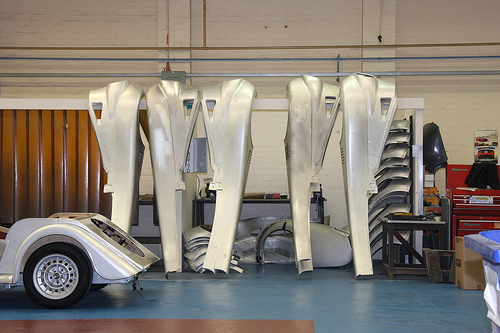<figcaption class="caption">Kan jy sommige dele van 'n motor sien wat onderstebo in 'n motorfabriek hang? Dit word van metaalplate gemaak.<a href="http://www.flickr.com/photos/exfordy/3469617474/in/photostream"> http://www.flickr.com/photos/exfordy/3469617474/in/photostream </a></figcaption></figure><p/>

<p>Watter ander eienskappe van metale onthou jy? Bespreek dit in die klas.</p>
<div class="teachers-guide">
<p>Metale gelei elektrisiteit en hitte. Leerders mag ook onthou dat metale rekbaar is. (Rekbaarheid beskryf 'n metaal wat in 'n draad uitgetrek kan word.)</p>
</div>
<p/>

<p>Kom ons doen 'n opwarmingsoefening wat ons oor metale en hul eienskappe sal laat dink.</p>

<p/>
<div class="activity" data-type="Activity"><h1 class="title">Dink oor materiale en hulle eienskappe</h1>
<p/>

<p><strong>INSTRUKSIES:</strong></p>
<ol data-class="ListEnumerated"><li>
<p>Voltooi die volgende tabel deur die name van verskillende materiale by te voeg by die eienskappe wat hier gelys is.</p>

           <table><tr><td><p><strong>Eienskap</strong></p></td><td><p><strong>Materiale</strong></p></td></tr><tr><td><p>Sterk</p></td><td><p/></td></tr><tr><td><p>Veerkragtig/buigsaam</p></td><td><p/></td></tr><tr><td><p>Gelei elektrisiteit</p></td><td><p/></td></tr><tr><td><p>Gelei hitte</p></td><td><p/></td></tr></table></li>
</ol><div class="exercises"><div class="problemset"><div class="entry"><div class="problem">
          </div><div class="solution">
<p/><p/>

          <table><tr><td><p><strong>Eienskap</strong></p></td><td><p><strong>Materiale</strong></p></td></tr><tr><td><p>Sterk</p></td><td><p>Leerderafhanklike antwoord: metale, plastieke, leer, beton en hout is almal voorbeelde van materiale wat leerders dalk mag noem.</p></td></tr><tr><td><p>Veerkragtig/buigsaam</p></td><td><p>Leerderafhanklike antwoord: sommige plastieke, rubber, sommige metale (veral in dun plate) is almal voorbeelde van antwoorde wat leerders dalk  mag noem.</p></td></tr><tr><td><p>Gelei elektrisiteit</p></td><td><p>Metale</p></td></tr><tr><td><p>Gelei hitte</p></td><td><p>Metale</p></td></tr></table><p/>
</div></div></div></div>

<p><strong>VRAE:</strong></p>
<div class="exercises"><div class="problemset"><div class="entry"><div class="problem">
<p>Wat beteken dit as 'n metaal buigsaam is? </p><hr/></div><div class="solution">
<p/><p>Veerkragtig beteken soepel en gebuig; moontlik om te buig en buk.</p>
</div></div><div class="entry"><div class="problem">
<p>Stel drie moontlike gebruike van veerkragtige materiale voor? </p><hr/><hr/><hr/></div><div class="solution">
<p/><p>Veerkragtige materiale kan gebruik word om klere wat moet kan buig en vou te maak; pypmateriaal of pype wat moet buig; bedekkings vir elektriese drade wat om hoeke moet buig; sole van skoen wat moet kan buig wanneer mens stap, ens.</p>
</div></div><div class="entry"><div class="problem">
<p>Stel drie moontlike gebruike voor van 'n materiaal wat 'n goeie geleier van elektrisiteit is. </p><hr/><hr/><hr/></div><div class="solution">
<p/><p>Geleidingskabels vir elektrisiteit, elektriese bedrading, elektroniese komponente van rekenaars en ander elektroniese toestelle, elektriese heinings (om eiendom te beskerm), ens.</p>
</div></div><div class="entry"><div class="problem">
<p>Stel drie moontlike gebruike voor van 'n materiaal wat 'n goeie geleier van hitte is. </p><hr/><hr/><hr/></div><div class="solution">
<p/><p>Goeie geleiers van hitte kan gebruik word om potte en panne, verhittingselemente ens. te maak.</p>
</div></div><div class="entry"><div class="problem">Watter een  van die volgende eienskappe sal belangrik wees as jy 'n materiaal moet kies om kookware (kookpotte) te maak? <figure>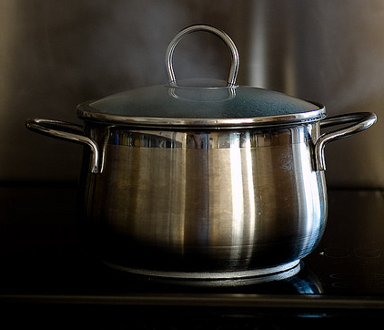<figcaption class="caption">'n Metaalpot. <a data-class="ExternalLink" href="http://www.flickr.com/photos/txberiu/2608488360/">http://www.flickr.com/photos/txberiu/2608488360/</a><a href="http://www.flickr.com/photos/txberiu/2608488360/"> http://www.flickr.com/photos/txberiu/2608488360/ </a></figcaption></figure><p/><hr/><hr/></div><div class="solution">
<p/><p>Materiale vir kookware sal moet sterk en rigied wees en ook hitte kan gelei.</p>
</div></div><div class="entry"><div class="problem">Watter van die bogenoemde eienskappe sal belangrik wees as jy 'n materiaal kies om drade te maak waarmee elektrisiteit versprei kan word (soos in die volgende foto gewys)? <figure>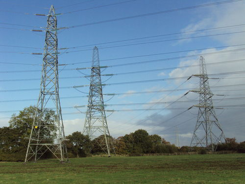<figcaption class="caption">Hierdie elektriese drade, wat deur spantorings gedra word, is van metaal gemaak.<a href="http://commons.wikimedia.org/wiki/File:Pylons,_Ledsham,_Wirral_1.JPG"> http://commons.wikimedia.org/wiki/File:Pylons,_Ledsham,_Wirral_1.JPG </a></figcaption></figure><p/><hr/><hr/></div><div class="solution">
<p/><p>Hierdie elektriese drade moet sterk en buigsaam wees en moet elektrisiteit kan gelei.</p>
</div></div><div class="entry"><div class="problem">Watter van die bogenoemde eienskappe sal belangrik wees as jy 'n materiaal moet kies om doringdraad te maak? <figure>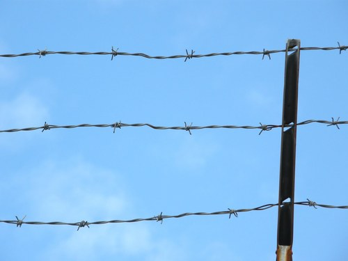<figcaption class="caption">'n Heining van doringdraad.</figcaption></figure><p/><hr/><hr/></div><div class="solution">
<p/><p>Die materiale wat gebruik word om heinings van doringdraad te maak moet sterk ,maar ook smeebaar wees sodat dit in lang dun drade verander word. Dit moet ook buigsaam wees dat die drade kan  buig.</p>
</div></div></div></div>

<p/>
</div>

<p/>
<div class="note col-md-6" data-type="visit">
<p>'n Interessante video oor 'n nuwe soort 'betonseil' met verskillende eienskappe. <iframe width="420" height="315" src="http://www.youtube.com/embed/Vb1pdvvoVoQ"></iframe></p>
</div>
<p/>

<p>Ons kan aan 'n paar eienskappe van materiale dink in terme van hulle voordele en  nadele. Weet jy wat dit is? Kom ons vind uit.</p>
<div class="teachers-guide">
<p>Leerders moet op hierdie stadium aangemoedig word om oor die wetenskaplike prosesse en produkte in terme van hulle voor- en nadele te begin dink. Dit sal 'n bewustheid skep dat wat ook al jy uitkry deur wetenskaplike pogings, altyd 'n koste oorweging ook het.Soms is die koste suiwer finansieel, ander kere kan die koste skade aan die individu (soos in die geval van die onverantwoordelike gebruik van medisyne en dwelms), of die omgewing ('n paar voorbeelde volg) wees.</p>
</div>
<p/></div><div class="section"><h3 class="title" id="toc-id-3">Voordele teenoor nadele</h3>
<p/>

<p>Ons het gesien dat sterkte en duursaamheid wenslike eienskappe in sommige materiale is. Ons wil h&#234; dat goed sterk moet wees en lank hou. Kom ons dink aan 'n voorbeeld.</p>
<figure>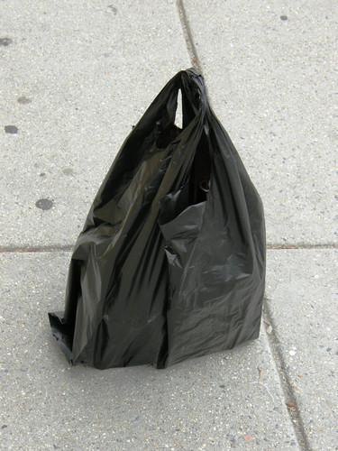<figcaption class="caption">'n Swart, plastiekinkopiesak.</figcaption></figure><p/>

<p>Waarom moet plastiekinkopiesakke sterk wees? </p><hr/><div class="teachers-guide">
<p>Moedig jou leerders aan om hulle te verbeel dat hulle 'n inkopiesak, wat vol swaar items gelaai is, dra. As die sak te swak of dun is, sal die items deur die sakke val.</p>
</div>
<p/>

<p>Waarom moet plastiekinkopiesakke duursaam wees? </p><hr/><div class="teachers-guide">
<p>Leerders moet aangemoedig word om in terme van die hergebruik van inkopiesakke te dink. Moedig leerders aan om ook aan die nie-vanselfsprekende gebruike vir inkopiesakke ook te dink, soos om kunswerke te maak of matte te weef.</p>
</div>
<p/>

<p>Ons noem die wenslike eienskappe van materiale voordele. Die nadele is die ongewenste eienskappe soos mens in hierdie prente van plastiek in die omgewing kan sien.</p>
<figure>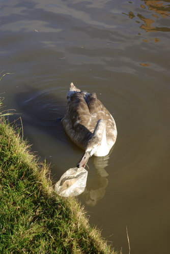<figcaption class="caption">'n Gans op die punt om 'n plastieksak in 'n rivier te eet.<a href="http://commons.wikimedia.org/wiki/File:Cygnet_on_the_Oxford_Canal_-_geograph.org.uk_-_1056892.jpg"> http://commons.wikimedia.org/wiki/File:Cygnet_on_the_Oxford_Canal_-_geograph.org.uk_-_1056892.jpg </a></figcaption></figure><figure>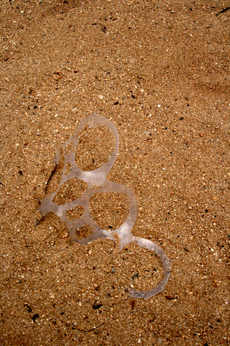<figcaption class="caption">Die plastiekringe van koeldrankverpakking is baie gevaarlik in die natuur aangesien dit om 'n dier se nek verstrengel kan raak.<a href="http://commons.wikimedia.org/wiki/File:Plastic_left_in_the_sand_near_the_Hilton_Hawaiian_Village._.jpg"> http://commons.wikimedia.org/wiki/File:Plastic_left_in_the_sand_near_the_Hilton_Hawaiian_Village._.jpg </a></figcaption></figure><p/>
<div class="teachers-guide">
<p>Wanneer jy 'n inkopiesak weggooi, kan sy duursaamheid beteken dat dit jare neem om afgebreek te word, daarom besoedel dit die omgewing oor 'n lang tydperk. Die sterkte daarvan mag beteken dat 'n dier wat in 'n stuk plastiek wat weggegooi is verstrengel raak, nie daaruit kan ontsnap nie. Die dier mag dalk sterf as gevolg hiervan.</p>
</div>
<p/>
<div class="note col-md-6" data-type="visit">
<p>'n Student van Hawaii kyk na plastiekvoorwerpe wat in die mae van stormvo&#235;ls gevind is. <iframe width="420" height="315" src="http://www.youtube.com/embed/yom6zlm5VqE"></iframe></p>
</div>
<p/>

<p>Die volgende aktiwiteit is nog 'n voorbeeld van voordele teenoor nadele.</p>

<p/>
<div class="activity" data-type="Activity"><h1 class="title">Voordele teenoor nadele</h1><div class="teachers-guide">
<p>Dit is 'n opsionele aktiwiteit.</p>
</div>
<p/>

<p>Kan jy jou indink dat 'n motor van suiwer goud gemaak word? So 'n motor sal baie waardevol wees!</p>

<p/>

<p><strong>INSTRUKSIES:</strong></p>
<ol data-class="ListEnumerated"><li>Kyk na die prent van die goue motor en antwoord dan die vrae wat volg.</li>
<li>Bespreek van die vrae met jou klasmaats voor jy jou antwoorde neerskryf.</li>
</ol><p/>
<figure id="gd-idp15627792">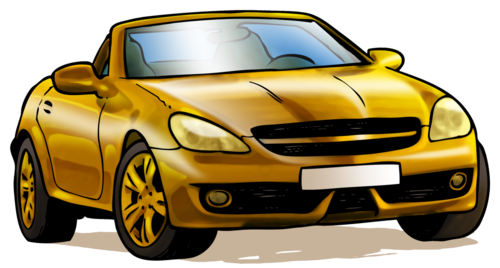</figure><p/>

<p><strong>VRAE:</strong></p>
<div class="exercises"><div class="problemset"><div class="entry"><div class="problem">
<p>Hoe voel jy oor die goue motor in die prentjie?  </p><hr/><hr/><hr/></div><div class="solution">
<p/><p>Leerderafhanklike antwoord. Moedig leerders aan om neer te skryf wat hulle oor die goue motor dink; watter gedagtes en gevoelens hulle daar rondom het. Dink hulle dit lyk mooi? Wil hulle so een h&#234;?</p>
</div></div><div class="entry"><div class="problem">
<p>Watter voordele is daar om 'n motor van goud te h&#234;?  </p><hr/><hr/></div><div class="solution">
<p/><p>'n Praktiese voordeel is dat goud nie roes nie. Vir sommige mense mag dit belangrik wees om vir almal te wys hoe ryk hulle is.</p>
</div></div><div class="entry"><div class="problem">
<p>Dink jy 'n goue motor sal baie sterk wees? Sal dit dalk veiliger wees as jy 'n ongeluk sou maak?  </p><hr/><hr/></div><div class="solution">
<p/><p>Laat leerders toe om die punt te debateer. Jy kan dalk hulle aandag daarop vestig dat goud 'n redelike sagte metaal is en dat om 'n goue motor te bestuur nie meer beskerming vir die passasiers bied as 'n motor wat meestal van staal gemaak is nie. Voorkom die wanopvatting dat motors heeltemal uit staal bestaan. Motors het frommelsones wat veiligheid bevorder.</p>
</div></div><div class="entry"><div class="problem">
<p>Wat is die nadele van 'n motor wat van goud gemaak is?  </p><hr/><hr/><hr/></div><div class="solution">
<p/><p>Goud is baie duur dus sal so 'n motor onbekostigbaar wees vir meeste mense. Goud is ook baie swaar (jou leerders sal dalk hieraan herinner moet word), daarom sal die kar te swaar wees om rond te beweeg. Dit sal baie petrol nodig h&#234; om dit te laat beweeg, en petrol is duur. Dit sal ook maklik krap. Sommige leerders mag dalk ook voel dat omdat dit so waardevol is, dit dalk gesteel mag word. Jy kan bys&#234; dat mens dit kan verseker teen diefstal, maar dat die versekering op so 'n waardevolle motor baie duur sal wees. Die gevolgtrekking is dat alhoewel 'n goue motor lekker klink om te h&#234;, dit nie 'n praktiese, veilige of brandstofbesparende opsie is nie.</p>
</div></div></div></div>

<p/>
</div>

<p/>

<p/>

<p>Ons moet altyd die voordele teen die nadele opweeg wanneer ons materiale vir 'n spesifieke taak moet kies.</p>

<p/>

<p>Hoe sal jy toets hoe sterk 'n materiaal is? Stel jou voor jy het verskillende soorte papier. Hoe sal jy toets watter papier die sterkste is? Bespreek dit in die klas en skryf 'n paar notas neer op die lyntjies voorsien.  </p><hr/><hr/><hr/><hr/><div class="teachers-guide">
<p>Moedig leerders aan om hul eie notas te maak terwyl jy in die klas praat aangesien dit 'n waardevolle vaardigheid is. Hulle kan dit of hier of in hulle werkboeke of selfs in 'n aparte notaboek maak - as jy so iets gebruik. Hier is 'n paar punte om die klasbespreking te lei:</p>
<ul data-class="ListBulleted"><li>Iets wat duursaam is hou lank.</li>
<li>Leerders mag dalk s&#234; dat iets sterk is as dit moeilik breek.</li>
<li>Laat leerders toe om te bespreek hoe hulle sal toets of 'n materiaal sterk is en laat hulle met 'n paar idees vorendag kom.</li>
<li>Leerders mag s&#234; dat die papier wat die moeilikste skeur die sterkste sal wees.</li>
</ul></div>
<p/>

<p>Die sterkte van papier is belangrik omdat ons papier vir 'n groot verskeidenheid goed gebruik.</p>
<figure><figcaption class="caption">Al hierdie voorwerpe word uit verskillende soorte papier met verskillende eienskappe, wat beste by die funksie van die voorwerp pas, gemaak.</figcaption></figure><p/>

<p>In die volgende aktiwiteit gaan ons die skeursterkte van verskillende tipes papier toets.</p>

<p/>
<div class="activity" data-type="Investigation"><h1 class="title">Watter tipe papier is die sterkste?</h1><div class="teachers-guide">
<p>Leerders kan jou help voorberei vir die aktiwiteit deur verskillende tipes papier skool toe te bring: koerantpapier, sneespapier, papierhandoeke of ou tydskrifte en geskenkpapier. Vra hulle om die grootste stukke wat hulle kan kry te bring.</p>
</div>
<p/>

<p><strong>DOEL:</strong> Om die skeursterkte van verskillende tipes papier te vergelyk.</p>
<div class="teachers-guide">
<p>Jy kan dat die leerders die papier in stroke van 20 x 5 cm elk skeur, of jy kan dit self voor die tyd doen om tyd te spaar. Leerder sal die krag wat nodig is om elke soort papier te skeur vergelyk. Hulle het nog nie die konsep krag te&#235;gekom nie (dit word in Gr 9 Energie en Verandering behandel), maar jy kan hulle aanmoedig om te dink oor wat hulle doen as hulle swaar albasters aan die stroke papier hang. Vra byvoorbeeld vir die leerders: "Wat beteken meer albasters in die jogurthouertjie?" Dit beteken die houer is swaarder en 'trek' harder aan die strook papier. (As jy nie genoeg albasters kan kry nie, kan jy klein klippies gebruik wat almal min of meer dieselfde grootte het. Jy moet dan verduidelik dat die klippies nie almal 'n massa van 5 g het nie, maar dat julle gaan maak of hulle het om die berekeninge te vereenvoudig.)</p>
</div>
<p/>

<p><strong>HIPOTESE:</strong></p>

<p>Wanneer jy 'n hipotese skryf moet jy s&#234; wat jy dink in jou ondersoek gaan gebeur. </p><hr/><hr/><div class="teachers-guide">
<p>Moontlike hipoteses is: 'Hoe dikker en sterker die papier, hoe meer albasters kan dit hou voor dit breek.' , 'Papier X is die sterkste', waar X een van die papiere is wat verskaf is.</p>
</div>
<p/>

<p><strong>MATERIALE EN APPARAAT:</strong></p>
<ul data-class="ListBulleted"><li>stroke van verskillende tipes papier (20cm x 5cm)</li>
<li>gaatjiesdrukker</li>
<li>sterk skuifspelde</li>
<li>jogurthouertjie</li>
<li>albasters</li>
<li>tou</li>
<li>handlens (opsioneel)</li>
</ul><div class="teachers-guide">
<p>Maak seker dat jy sterk skuifspelde gebruik sodat hulle nie tydens die ondersoek onder die druk van die albasters buig nie. Maak seker om 'n verskeidenheid papier te gebruik, soos filtreerpapier, sneespapier, kreukelpapier, waspapier, koerantpapier, normale wit papier, harder karton ens. Ons stel voor dat jy ook die stukke papier nommer sodat leerders maklik daarna kan verwys en die nommers later kan gebruik om hulle in volgorde van sterkte te rangskik in die vrae wat volg. As jy tyd het, kan jy die toets ook doen met ander materiale soos plastiek inkopiesakke of tinfoelie.</p>
</div>
<p/>

<p><strong>METODE:</strong></p>
<div class="teachers-guide">
<p>Jy kan die idee van 'n regverdige toets hier bekend stel. Vra jou leerders waarom hulle dink hulle die gaatjies in elke tipe papier ewe ver van die rant moet druk? Dit is sodat dit 'n regverdige toets kan wees - elke stuk papier moet regverdig en gelyk getoets word. As die gaatjies verskillende afstande van die rant gedruk word, mag dit sommige papier sterker of swakker maak as wat hulle eintlik is. Jy  moet al die veranderlikes beheer sodat die enigste ding wat verander die tipe papier is.</p>
</div><ol data-class="ListEnumerated"><li>Druk 'n gaatjie aan altwee kante van die papierstrook. Dit is sodat jy die papier twee keer aan albei kante kan toets. Maak seker dat die gaatjies in die middel en ewe ver van die rant van die strook is. Dit sal verseker dat die toets regverdig is.</li>
<li>Maak 'n S-vorm met die skuifspeld en haak dit deur die gaatjie in die papier.</li>
<li>Maak 'n handvatsel met die tou vir die jogurthouertjie.</li>
<li>Hang die jogurthouertjie aan die skuifspeld en hou dit in jou hand.</li>
<li>Sit die albasters een-vir-een in die jogurthouertjie totdat die papier begin skeur. Tel hoeveel albasters in die houertjie is. (Wenk: Sit die albasters versigtig in die jogurthouertjie anders gaan die skok van die val die papier skeur).</li>
<li>Herhaal stappe 1 - 5 deur die anderkant van die strook te gebruik en tel weer die albasters. Neem die gemiddeld van die hoeveelheid albasters.</li>
<li>Herhaal dit met die ander stroke papier. Doen elkeen tweemaal en neem die gemiddeld.</li>
<li>As elke albaster 'n massa van 5 gram het, werk die massa in gramme uit wat nodig was om elke strook papier te laat skeur. Skryf die getal in die finale kolom van jou tabel.</li>
<li>As jy tyd het kan jy ook verskillende soorte materiale soos plastiek inkopiesakke, tinfoelie of kleefpapier gebruik.</li>
</ol><figure id="gd-idp7924048">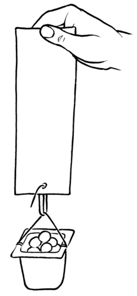</figure><p>Wenk: Om die <strong>gemiddeld</strong> van 'n stel getalle te bereken, moet jy al die getalle bymekaar tel en dan deel deur die hoeveelheid wat daar in die stel was. In hierdie ondersoek sal jy die hoeveelheid albasters wat jy gebruik het bymekaar tel vir elke keer wat jy die papier se sterkte getoets het (dit was twee keer vir elke strook papier) en dit dan deur 2 deel om die gemiddelde hoeveelheid albasters wat elke stuk papier kan hou voor dit skeur te bereken.</p>

<p>Byvoorbeeld, as jy 5 albasters in die eerste toets gehad het en 3 in die tweede toets, sal ons die gemiddeld as volg bereken:</p>

<p>5+3=8  albasters</p>

<p>8 &#247; 2=4 albasters gemiddeld</p>

<p>Daarom kan hierdie tipe papier 'n gemiddeld van 4 albasters hou.</p>

<p/>

<p><strong>RESULTATE EN WAARNEMINGS:</strong></p>

<p/>

<p>Teken jou resultate in die tabel op</p>
<table><tr><td><p><strong>Tipe papier</strong></p></td><td><p><strong>Hoeveelheid albasters</strong></p>

                    
<p><strong>(Toets 1)</strong></p></td><td><p><strong>Hoeveelheid albasters</strong></p>

                    
<p><strong>(Toets 2)</strong></p></td><td><p><strong>Gemiddelde hoeveelheid albasters</strong></p></td><td><p><strong>Massa van die albasters</strong></p></td></tr><tr><td><p/></td><td><p/></td><td><p/></td><td><p/></td><td><p/></td></tr><tr><td><p/></td><td><p/></td><td><p/></td><td><p/></td><td><p/></td></tr><tr><td><p/></td><td><p/></td><td><p/></td><td><p/></td><td><p/></td></tr><tr><td><p/></td><td><p/></td><td><p/></td><td><p/></td><td><p/></td></tr></table><p/>

<p>Antwoord nou die volgende vrae:</p>
<div class="exercises"><div class="problemset"><div class="entry"><div class="problem">
<p>Kyk versigtig na die oppervlak van een van die stroke papier. Kyk nou na die rant wat geskeur het. Kan jy iets besonders opmerk? Beskryf waarvan jy dink die papier gemaak is. </p><hr/><hr/><hr/></div><div class="solution">
<p/><p>Leerders behoort op te let dat dit lyk of die papier uit lae vesels bestaan. Die vesels klou aanmekaar vas omdat hulle klein vertakkings tussen hulle het wat in mekaar verstrengel word om die papier ekstra sterkte te gee.</p>
</div></div><div class="entry"><div class="problem">
<p>Watter papier is die sterkste? </p><hr/></div><div class="solution">
<p/><p>Leerderafhanklike antwoord gebaseer op bewyse vanuit die ondersoek.</p>
</div></div><div class="entry"><div class="problem">
<p>Watter papier is die swakste? </p><hr/></div><div class="solution">
<p/><p>Leerderafhanklike antwoord gebaseer op bewyse vanuit die ondersoek.</p>
</div></div><div class="entry"><div class="problem">
<p> Rangskik die verskillende tipes papier <em>in volgorde van toenemende skeursterkte</em>. (Dit beteken van swakste tot sterkste.)</p><hr/><hr/></div><div class="solution">
<p/><p>Leerderafhanklike antwoord</p>
</div></div></div></div>

<p/>

<p><strong>ANALISE EN EVALUERING:</strong></p>

<p/>

<p>Kom ons analiseer en dink nou oor die resultate van die ondersoek.</p>
<div class="exercises"><div class="problemset"><div class="entry"><div class="problem">
<p>Wat dink jy veroorsaak dat een papier sterker as 'n ander een is?  </p><hr/><hr/><hr/></div><div class="solution">
<p/><p>Daar is meer as een faktor wat hier 'n rol speel, maar oor die algemeen is die papier wat die dikste is gewoonlik die sterkste. Dit is omdat die lae vesels dikker is en daar dus meer vesels aan mekaar vasklou. Papier waarin die vesels langer is en stewiger verpak is, is ook sterker en as die papier met 'n superdun laag plastiek bedek word, maak dit ook die papier sterker. Leerders moet aangemoedig word om vir hierdie tekens te soek.</p>
</div></div><div class="entry"><div class="problem">
<p>Hoe sal jy die ondersoek aanpas om die sterkte van verskillende soorte plastiek te toets?  </p><hr/><hr/><hr/><hr/></div><div class="solution">
<p/><p>Plastiek is oor die algemeen sterker as papier dus sal ons eerstens die metode moet verander om swaarder gewigte aan die plastiekstroke te kan hang. Dit is 'n goeie geleentheid om die idee van regverdige toetse bekend te stel: Soveel veranderlikes as moontlik moet dieselfde gehou word: die lengte van die plastiekstroke, die metode waarmee die gewigte vasgemaak word aan die plastiekstroke ens.</p>
</div></div><div class="entry"><div class="problem">
            
<p>Wat het jy gedoen om seker te maak dat dit 'n regverdige toets is?  </p><hr/><hr/><hr/><hr/><hr/></div><div class="solution">
<p/><p/>

          <ul data-class="ListBulleted"><li>Ons het papierstroke van dieselfde lengte en wydte gebruik.</li>
<li>Ons het identiese gaatjies in al die verskillende papierstroke gedruk.</li>
<li>Ons het die gaatjie op presies dieselfde plek in al die stroke gedruk.</li>
<li>Ons het dieselfde metode vir al die tipes papier gebruik om die albasters aan die stroke te hang.</li>
<li>Ons het elke meting herhaal (deur aan beide kante van die papierstrook te toets).</li>
</ul></div></div><div class="entry"><div class="problem">
<p>Hoe sal jy die ondersoek aanpas om die buigsaamheid van verskillende tipes materiale te toets?  </p><hr/><hr/><hr/><hr/></div><div class="solution">
<p/><p>Leerderafhanklike antwoord. Een voorstel mag wees om dieselfde grootte stroke van die materiaal wat getoets word te sny en hulle oor die kant van 'n tafel te laat hang. As 'n gewig aan die deel gehang word wat oorhang, kan daar 'n manier gevind word om die hoeveelheid buiging wat plaasvind te meet. Leerders kan maniere bespreek om te verseker dat die toets regverdig is.</p>
</div></div><div class="entry"><div class="problem">
<p>Waarom het jy die eksperiment herhaal met dieselfde tipe papier?  </p><hr/><hr/><hr/></div><div class="solution">
<p/><p>Dit is belangrik om eksperimente te herhaal om seker te maak dat jy elke keer dieselfde/soortgelyke antwoorde kry. Deur 'n eksperiment te herhaal en die gemiddelde waarde te bereken kan ons foute uitskakel of voorkom dat 'n resultaat per ongeluk gebeur. Ons s&#234; dit maak die antwoord meer betroubaar.</p>
</div></div></div></div>

<p/>

<p><strong>GEVOLGTREKKING:</strong></p>

<p>Wat kan jy uit die ondersoek aflei?  </p><hr/><hr/><div class="teachers-guide">
<p>Moontlike gevolgtrekkings sluit in: 'Hoe sterker die papier, hoe meer albasters kan dit hou voor dit skeur', of 'Papier X is die sterkste as dit die meeste albasters kan hou voor dit skeur en papier Y is die swakste', ens.</p>
</div></div>

<p/>

<p>Sterkte, <strong>buigsaamheid</strong> (die vermo&#235; om te buig of te buk), elektriese- en warmte geleidingsvermo&#235; is belangrike eienskappe van materiale waarvan ons in Gr. 5 geleer het en nou weer hersien.</p>

<p/>

<p>Kan jy aan materiale dink wat sterk en buigsaam is? Die meeste mense sal dadelik aan plastiek dink! Die meeste plastieke kan maklik smelt en <strong>gevorm</strong> word in verskillende vorms vir verskillende doele. Waarom dink jy kan plastiek maklik 'gesmelt en gevorm' word? </p><hr/><div class="teachers-guide">
<p>Die meeste plastiek smelt maklik omdat hulle by redelike lae temperature smelt. Ons s&#234; hulle het <em>lae smeltpunte</em>. Let op dat dit nie waar is vir alle plastieke nie.</p>
</div><figure><figcaption class="caption">Al hierdie items is van plastiek in verskillende vorms, groottes en kleure gemaak.</figcaption></figure><p/>

<p>Ons gaan van twee nuwe eienskappe van materiale leer, naamlik kookpunt en smeltpunt.</p>

<p/>

<p>Kom ons kyk eers of almal verstaan dat daar 'n verskil tussen die woord warmte en temperatuur is. Die twee woorde, warmte en temperatuur, hou verband met mekaar, maar beteken nie dieselfde nie:</p>

<p/>
<ul data-class="ListBulleted"><li><strong>Warmte</strong> is die oordrag van energie van een voorwerp na 'n ander voorwerp. Dit gebeur omdat daar 'n verskil in die temperatuur van die twee voorwerpe is. Die oordrag van energie sal van die warmer voorwerp na die kouer voorwerp beweeg totdat hulle dieselfde temperatuur het. Jy kan nie warmte direk meet nie, maar jy kan die effek daarvan op 'n stof waarneem. Verandering in warmte kan gewoonlik waargeneem word as verandering in temperatuur.</li>
<li><strong>Temperatuur</strong> word gebruik om te beskryf hoe warm of hoe koud iets is. Temperatuur kan direk gemeet word met 'n termometer.</li>
</ul><p/>

<p>As warmte-energie bygevoeg word is daar gewoonlik 'n styging in temperatuur, daarom verwar mense gewoonlik warmte en temperatuur. Dit is egter nie dieselfde ding nie! Ons sal volgende kwartaal in Energie en Verandering weer na verhitting as oordrag van energie kyk.</p></div><div class="section"><h3 class="title" id="toc-id-4">Kookpunte en smeltpunte</h3>
<p/>
<div class="note col-md-6" data-type="newwords"><ul data-class="ListBulleted"><li>temperatuur</li>
<li>termometer</li>
<li>warmte</li>
<li>smeltpunt</li>
<li>kookpunt</li>
</ul></div>
<p/>

<p>Onthou jy dat jy geleer het oor die verandering van die fases in vorige grade? Ons sal hier fokus op smelting en kook. Kyk na die volgende diagram om jou gedagtes te verfris oor die verskillende veranderinge in die fases tussen vastestowwe, vloeistowwe en gasse.</p>

<p/>
<figure id="gd-idp8150384">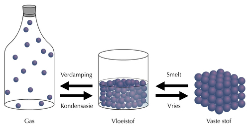</figure><div class="exercises"><div class="problemset"><div class="entry"><div class="problem">
<p>Smelting is wanneer 'n vastestof in 'n vloeistof verander. Kyk na die foto van die kers wat brand. Wat gebeur met die was om die vlam? </p><hr/></div><div class="solution">
<p/><p>Die was smelt.</p>
</div></div><div class="entry"><div class="problem">
<p>Bespreek  wat jy dink met die was gebeur het met jou maat. Skryf jou antwoord hieronder neer. </p><hr/><hr/></div><div class="solution">
<p/><p>Bespreek dit met die klas. Die hitte-energie van die vlam op die brandende pit word oorgedra na die was wat veroorsaak dat die temperatuur van die was styg. As die temperatuur op 'n sekere punt kom (wat die <strong>smeltpunt</strong> genoem word), begin die was smelt soos dit van fase verander van vastestof na vloeistof.</p>
</div></div></div></div>

<p/>
<figure><figcaption class="caption">'n Brandende kers.<a href="http://www.flickr.com/photos/skyseeker/20220695/"> http://www.flickr.com/photos/skyseeker/20220695/ </a></figcaption></figure><p/>

<p>Jy kan in die diagram sien hoe 'n vloeistof in 'n gas verander deur verdamping. As jy byvoorbeeld water in 'n piering in die son los, sal die water verdamp. Verdamping kan by enige temperatuur plaasvind. Wanneer dit kook moet die vloeistof egter verhit word tot dit sy <strong>kookpunt</strong> bereik. Borrels waterdamp vorm in die vloeistof en styg.</p>

<p/>
<div class="teachers-guide">
<p>Daar is 'n paar belangrike verskille tussen verdamping en kook. Verdamping kan <em>onder</em> die kookpunt van 'n vloeistof plaasvind, maar die vloeistof kan eers kook as dit verhit is en sy <em>kookpunt</em> bereik het. Verdamping vind ook op die <em>oppervlak van 'n vloeistof</em> plaas as die <em>individuele</em> deeltjies genoeg energie kry om die kragte wat hule in die vloeistof hou te oorkom en individuele deeltjies in 'n gasfase word. Kook vind plaas <em>binne-in die vloeistof</em> wanneer genoeg deeltjies <em>in massas ontsnap en borrels</em> gas in die vloeistof vorm. Die gasborrels styg dan na die oppervlak van die vloeistof en ons s&#234; dan die vloeistof kook.</p>
</div>
<p/>

<p>Kan jy aan minstens drie maniere dink om water te kook? Bespreek dit met jou klas en skryf jou antwoord neer. </p><hr/><hr/><hr/><div class="teachers-guide">
<p>Vra jou leerders hierdie vraag en kry antwoorde. Moedig hulle aan om notas te neem:</p>
<ul data-class="ListBulleted"><li>Water kan in 'n ketel gekook word. </li>
<li>Water kan in 'n pot op die stoof gekook word.</li>
<li>Water kan in die mikrogolfoond gekook word.</li>
</ul></div>
<p/>

<p>Wat sal gebeur as jy probeer om die ketel in die mikrogolf of op die stoof te sit? Ons sal binnekort uitvind!</p>

<p/>
<div class="activity" data-type="Activity"><h1 class="title">Kook en smelt</h1><div class="teachers-guide">
<p>Dit is 'n opsionele aktiwiteit.</p>
</div>
<p>Kyk versigtig na die prent hieronder. Dit lyk of iets hier verkeerd gegaan het!</p>

<p/>
<figure id="gd-idp10965808">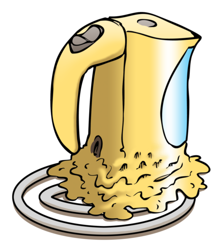</figure><p><strong>VRAE:</strong></p>
<div class="exercises"><div class="problemset"><div class="entry"><div class="problem">
<p>Skryf 'n berig om te verduidelik wat jy dink met die ketel in die prentjie gebeur het . </p><hr/><hr/><hr/></div><div class="solution">
<p/><p>Dit is net nodig om 'n paar sinne te skryf. Die leerders moet oplet dat iemand 'n plastiek ketel op die stoof gesit het. As die persoon probeer om water in die ketel te verhit sal die ketel smelt as gevolg van die kontak met die vlam/hitte. Die ketel moet ingeprop word om die water te verhit.</p>
</div></div><div class="entry"><div class="problem">
<p>Waarom dink jy het die persoon die fout gemaak om die ketel op die stoof te probeer verhit? </p><hr/><hr/></div><div class="solution">
<p/><p>Leerders kan hulle eie redes hier uitdink. Dalk was die persoon gewoond daaraan om water op die stoof in 'n metaalketel warm te maak. Dalk het die persoon nie geweet dat die plastiek sou smelt nie. Dalk was die persoon net agtelosig en het 'n fout gemaak.</p>
</div></div><div class="entry"><div class="problem">
<p>Dink jy plastiek is 'n goeie keuse van materiaal om 'n hele kookpot van te maak? Waarom s&#234; jy so? </p><hr/><hr/></div><div class="solution">
<p/><p>Nee. Plastiek is nie 'n goeie keuse nie omdat dit smelt wanneer dit ho&#235;r as 'n sekere temperatuur verhit word.</p>
</div></div><div class="entry"><div class="problem">
<p>Waarom smelt die plastiek ketel nie as ons water daarin kook? </p><hr/><hr/></div><div class="solution">
<p/><p>Die water kook by 'n temperatuur wat laer is as die temperatuur wat nodig is om plastiek te laat smelt.</p>
</div></div><div class="entry"><div class="problem">
	    
<p>Soms word net die handvatsels van die kookpot van plastiek of hout gemaak. Waarom dink jy is dit so? </p><hr/><hr/></div><div class="solution">
<p/><p>Dit is omdat hout en plastiek, anders as metaal, nie goeie geleiers van hitte is nie; daarom kan jy die pot so maklik optel.</p>
</div></div></div></div>
<div class="teachers-guide">
<p>Hierdie is ook 'n uitbreidingsvraag aangesien ons nie spesifiek hitte-geleiding in die graad behandel nie, maar dit word in vorige grade behandel.</p>
</div></div>

<p/>

<p>By watter temperatuur kook water? Ons gaan 'n ondersoek doen om uit te vind! Aangesien ons metings van temperatuur moet neem vir die ondersoek gaan ons eers kyk of almal weet hoe temperatuur gemeet word.</p>
<div class="teachers-guide">
<p>Sommige leerders mag dalk weet dat water kook teen 'n temperatuur van omtrent 100&#176;C (100 grade Celsius), afhangend van faktore soos hoogte bo seespie&#235;l en atmosferiese druk. Moenie die vraag direk antwoord nie; gebruik dit eerder om die volgende aktiwiteit in te lei.</p>
</div>
<p/>

<p>Was jy al ooit so siek dat jy koors gehad het? Het iemand toe jou temperatuur geneem?</p>

<p/>

<p>Jou temperatuur is dalk met 'n <strong>termometer</strong> geneem. 'n Termometer kan gebruik word om uit te vind hoe warm of hoe koud iets is. 'n Termometer is 'n instrument wat temperatuur meet.</p>
<figure>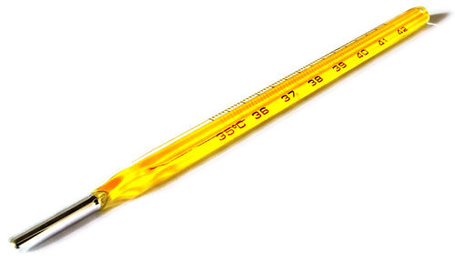<figcaption class="caption">Hierdie is 'n termometer wat gebruik word om jou temperatuur te meet as jy koors het.<a href="http://www.flickr.com/photos/andresrueda/3407340937/"> http://www.flickr.com/photos/andresrueda/3407340937/ </a></figcaption></figure><p/>
<div class="note col-md-6" data-type="takenote">
<p>Die kwik in hierdie soorte termometers is giftig en gevaarlik en moet dus versigtig hanteer word.</p>
</div>
<p/>
<div class="note col-md-6" data-type="newwords"><ul data-class="ListBulleted"><li>inkrimp</li>
<li>uitsit</li>
<li>konstante</li>
<li>onafhanklike veranderlikes</li>
<li>afhanklike veranderlike</li>
<li>hoogte</li>
</ul></div>
<p/>
<div class="teachers-guide">
<p>Hier is 'n opsionele uitbreidingsaktiwiteit oor hoe 'n termometer werk. Dit hou verband met wat leerders in Gr 8 in Materie en Materiale gaan doen. Volgende jaar sal leerders na die Deeltjiemodel van Materie kyk en binne die raamwerk sal digtheid en inkrimping en uitsitting van materiale behandel word. Dit is egter 'n goeie uitbreidingsoefening om leerders te kry om te dink oor hoe 'n termometer werk en so die idee in te lei dat materiale <strong>uitsit</strong> (wanneer verhit) en <strong>inkrimp</strong> (wanneer afkoel) as gevolg van die vermeerdering van kinetiese-energie van die deeltjies (die grootte en hoeveelheid deeltjies verander nie, dit is net die spasie tussen die deeltjies wat groter of kleiner word).</p>

<p/>

<p><strong>Nota:</strong> Water is 'n uitsondering wat gewoonlik uitsit wanneer dit 'n vastestof (ys) word. Dit sal in later grade weer behandel word.</p>

<p/>

<p><strong>Aktiwiteit: Hoe werk 'n termometer? </strong></p>

<p/>

<p>Die gewone glas termometer wat jy in die prent sien word 'n boltermometer genoem. Alle boltermometers het 'n redelike groot bol wat aan 'n dun buis vas is. Die termometer het gewoonlik helderkleurige vloeistof in. Vloeistowwe neem minder spasie op wanneer hulle koud is en meer wanneer hulle warm is. Ons s&#234; hulle krimp as hulle afkoel en sit uit as hulle verhit word.</p>

<p/>
<figure id="gd-idp12664704">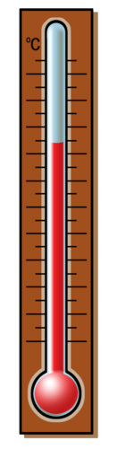</figure><p><strong>VRAE:</strong></p>
<ol data-class="ListEnumerated"><li>Wat dink jy sal met die vlak van die vloeistof in die termometer gebeur as die vloeistof binne-in uitsit?</li>
</ol><p><em>Die vlak van die vloeistof sal styg as die vloeistof uitsit.</em></p>
<ol data-class="ListEnumerated"><li>Wat dink jy sal met die vlak van die vloeistof gebeur as dit in die yskas gesit word? S&#234; <em>hoekom</em> dit gebeur.</li>
</ol><p><em>Die binnekant van die yskas is koud. Dit sal veroorsaak dat die vloeistof binne-in die termometer inkrimp. Die vlak van die vloeistof sal daal.</em></p>

<p/>
</div>
<p/>
<div class="note col-md-6" data-type="visit">
<p>Die video wys hoe om 'n laboratorium termometer te gebruik. <iframe width="420" height="315" src="http://www.youtube.com/embed/hmMZDJ3Rwyo"></iframe></p>
</div>
<p/>

<p>Kom ons ondersoek nou kook en smelting.</p>

<p/>
<div class="activity" data-type="Investigation"><h1 class="title">Wat is die kookpunt van water?</h1><div class="teachers-guide">
<p>Die ondersoek in die leerders se boek sluit slegs die ondersoek vir die kookpunt van water in soos aanbeveel in die KABV. Ons wil egter h&#234; dat jy ook na die smeltpunt van ys kyk. Hierdie tweede deel is in die onderwysersgids ingesluit.</p>
</div>
<p/>

<p><strong>DOEL:</strong> Om kook waar te neem en die kookpunt van water te bepaal.</p>

<p/>
<div class="teachers-guide">
<p>KABV beveel aan dat hierdie ondersoek met 'ander vloeistowwe' soos lemoensap, appelsap en kola gedoen word. Die een kwelpunt om in ag te neem is dat die voorgestelde drankies almal oplossings van stowwe <em>in water</em> is. Hulle kookpunte sal effe ho&#235;r as suiwer water wees, maar dit is omdat die kookpunt van die oplossing verhoog wanneer jy stowwe by water voeg. In al hierdie voorbeelde is dit nog steeds die water wat kook (die verskynsel of die fenomeen word <em>kookpuntverhoging</em> genoem). Soms wanneer stowwe (soos etanol) by water gevoeg word kan dit die kookpunt van water afbring (verwys na Raoult se Wet). Dit is baie detail en jou leerders hoef dit nie op hierdie stadium weet nie.</p>

<p/>

<p>Hier is 'n paar voorstelle om die ondersoek uit te brei:</p>
<ol data-class="ListEnumerated"><li>Bepaal die kookpunt van metanol (brandspiritus) of etanol (beskikbaar in ontsmettingsalkohol by apteke). Die punt van die uitbreiding sal wees om te wys dat verskillende stowwe verskillende kookpunte het.</li>
</ol><p><strong>Nota:</strong> Brandspiritus kan in plaas van metanol gebruik word, maar dit bevat slegs 9.5% metanol in meer as 80% etanol. Dit beteken dat daar nie so 'n groot verskil tussen die eksperimente wat met etanol en die wat met brandspiritus gedoen word sal wees nie.</p>

<p><strong>Waarskuwing:</strong> Wees versigtig as jy met hierdie stowwe werk, veral met metanol, aangesien dit gevaarlik is. Dra handskoene en probeer om nie die dampe in te asem nie. Beide etanol en metanol is ook baie vlambaar en mens moet versigtig wees wanneer jy hulle verhit. 'n Veilige manier om etanol of metanol tot kookpunt te verhit word in die volgende diagram ge&#239;llustreer. Die proefbuis wat die etanol of metanol bevat moet in 'n beker kraanwater gehang word en stadig verhit word. Die beginsel van termiese ekwilibrium beteken dat die water en die etanol/metanol by dieselfde temperatuur sal wees, dus kan die temperatuur van die water vervang word vir die temperatuur van die etanol/metanol.</p>

<p/>
<figure id="gd-idp17989152">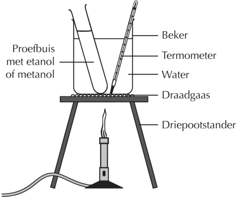</figure><p/>
<ol data-class="ListEnumerated"><li>Bepaal die kookpunt van water deur 'n ander metode byvoorbeeld om 'n pot op die stoof te sit of 'n ketel te kook. Die punt is dat dit sal wys dat die kookpunt van water konstant is (teen 'n konstante druk, natuurlik, sodat dit sal sin maak om die uitbreidings saam met die prosedure wat hieronder beskryf word te doen).</li>
</ol></div>
<p/>

<p><strong>HIPOTESE:</strong></p>

<p>Wat is jou hipotese vir die ondersoek? </p><hr/><hr/><div class="teachers-guide">
<p>Moontlike hipoteses wat leerders kan gee sluit in om vanuit hulle voorkennis te s&#234; wat die kookpunt van water is.</p>
</div>
<p/>

<p><strong>MATERIALE EN APPARAAT:</strong></p>
<ul data-class="ListBulleted"><li>glasbekers x 2 (of klein pot)</li>
<li>Bunsenbrander (of stoofplaat)</li>
<li>driepoot met gaas</li>
<li>kraanwater</li>
<li>termometer</li>
<li>tregter</li>
<li>ysblokkies</li>
</ul><div class="teachers-guide">
<p>Voor jy die ondersoek begin moet die klas in die groepe waarin hulle die ondersoek sal uitvoer, verdeel word. Laat jou leerders eers die volgende vrae, wat konsepte van Gr 6 hersien, in hul groepe bespreek voor hulle begin.</p>
</div>
<p/>

<p>Bespreek die volgende vrae in jou groep voor julle begin:</p>

<p/>
<div class="exercises"><div class="problemset"><div class="entry"><div class="problem">
<p>Bespreek wat jy weet oor gasse, vloeistowwe en vastestowwe; die drie fases van materie. Skryf julle idees vanuit die bespreking neer. </p><hr/><hr/><hr/><hr/><hr/><hr/></div><div class="solution">
<p/><p/>

          <ul data-class="ListBulleted"><li>Die deeltjies in vastestowwe is styf teen mekaar in vaste posisies gepak, daarom behou vastestowwe hulle vorm. Hulle kan nie saamgepers word nie.</li>
<li>Die deeltjies in vloeistowwe is nader aan mekaar, maar nie in vaste posisies nie en kan rondbeweeg. Dit beteken dat vloeistowwe die houer waarin hulle is kan vul. Hulle is nie regtig saampersbaar nie.</li>
<li>Die deeltjies in gasse is regtig ver van mekaar af, daar is geen rangskikking van deeltjies nie, hulle beweeg waarheen hulle wil. Gasse kan derhalwe maklik saamgepers word.</li>
</ul><p>Leerders moet aangemoedig word om oor die verskillende fases van materie te dink in terme van die deeltjiemodel wat in Gr 6 aan hulle bekend gestel is en waaroor meer in Gr 8 uitgebrei word.</p>
</div></div><div class="entry"><div class="problem">
<p>Wat moet met water gebeur om te vries? </p><hr/></div><div class="solution">
<p/><p>Vir water om te vries moet dit afkoel.</p>
</div></div><div class="entry"><div class="problem">
<p>Wat moet gebeur vir water om te kook? </p><hr/></div><div class="solution">
<p/><p>Vir water om te kook moet dit verhit word.</p>
</div></div><div class="entry"><div class="problem">
<p>Hoe meet ons temperatuur? </p><hr/></div><div class="solution">
<p/><p>Ons meet temperatuur met 'n termometer.</p>
</div></div><div class="entry"><div class="problem">
<p>Kan jy onthou wat die kookpunt en vries-/smeltpunt van water is? As jy kan, skryf dit in die spasie hieronder. </p><hr/></div><div class="solution">
<p/><p>Dit is nie belangrik dat leerders hierdie temperature onthou nie, aangesien hulle dit binnekort eksperimenteel gaan bepaal. Die vraag is bygevoeg om jou toe te laat om te bepaal hoeveel leerders reeds weet.</p>
</div></div><div class="entry"><div class="problem">Kom ons maak 'n paar voorspellings. Lees die twee stellings hieronder en dui aan of jy SAAMSTEM, VERSKIL of ONSEKER is deur 'n kruisie in die ooreenstemmende kolom te trek:</div><div class="solution">
<p/><p>Leerderafhanklike antwoorde.</p>
</div></div></div></div>

<p/>
<div class="teachers-guide">
<p>Die konsep van voorspellings maak in wetenskaplike ondersoeke word hier ingelei.</p>
</div>
<p/>
<table><tr><td><p><strong>Stelling</strong></p></td><td><p><strong>STEM SAAM</strong></p></td><td><p><strong>VERSKIL</strong></p></td><td><p><strong>ONSEKER</strong></p></td></tr><tr><td><p>Water kan warmer as 100&#176;C word.</p></td><td><p/></td><td><p/></td><td><p/></td></tr><tr><td><p>Water vries altyd by 0&#176;C.</p></td><td><p/></td><td><p/></td><td><p/></td></tr></table><p/>

<p>Veiligheidsmaatre&#235;ls</p>
<ul data-class="ListBulleted"><li>Jou onderwyser sal demonstreer hoe om veilig met 'n Bunsenbrander te werk. </li>
<li>Onthou dat kokende water pynlike brandwonde kan veroorsaak.</li>
<li>Die termometer is van dun glas gemaak. Hou dit liggies vas en moet dit nie gebruik om die water te roer nie. Wees versigtig om dit nie te laat val of teen die onderkant of kante van die beker te stamp nie.</li>
</ul><div class="teachers-guide">
<p>Steek altyd eers die vuurhoutjie (of aansteker) aan voor jy die gas oopdraai as jy die Bunsenbrander aansteek.</p>

<p>Dit mag dalk beter wees om vooraf hierdie eksperiment te probeer om te sien hoe gereeld die watertemperatuur gemeet moet word. Tydintervalle sal afhang van die volume van die water. KABV beveel aan dat intervalle van 3 minute gebruik word, maar korter intervalle sal meer datapunte gee om 'n grafiek te trek.</p>
</div>
<p/>

<p><strong>METODE:</strong></p>
<ol data-class="ListEnumerated"><li>Stel jou apparaat op soos in die prent aangedui. Onthou dat as jy die temperatuur wil meet, die termometer nie aan die kante moet raak nie. <figure id="gd-idp17900304">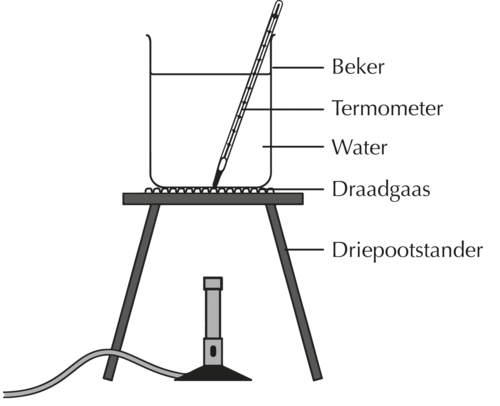</figure></li>
</ol><ol data-class="ListEnumerated"><li>Meet die watertemperatuur voordat jy die water begin verhit. Dit sal jou lesing by tyd 0 wees.</li>
<li>Steek die brander aan en verhit die water.</li>
<li>Meet die temperatuur op gereelde intervalle. Teken die temperatuur aan in die tabel wat verskaf is.</li>
<li>Na 'n tydjie sal jy oplet dat die temperatuur van die water <strong>konstant</strong> word (dit is wanneer die temperatuur ophou styg). Neem die temperatuur nog drie keer (een keer elke drie minute) na dit gebeur. Wat let jy op oor die water? <hr/><hr/></li>
</ol><div class="teachers-guide">
<p>Leerders behoort waar te neem dat die water begin kook. As dit begin kook sal die temperatuur van die water konstant bly. Die beste grafiek word verkry wanneer die water liggies geroer word terwyl dit verhit word, dit verseker dat die water eenvormig verhit.</p>
</div>
<p/>

<p><strong>RESULTATE EN WAARNEMINGS:</strong></p>

<p/>
<div class="note col-md-6" data-type="takenote">
<p>Jy mag dalk vind dat die kookpunt van water wat jy gemeet het effe minder as  100&#176;C is. Dit beteken nie dat jy verkeerd gemeet het nie. Die kookpunt van water hang af van atmosferiese druk. By seevlak (naby aan die oseaan) kook water teen  100&#176;C. Water kook by 'n laer temperatuur by ho&#235;r <strong>hoogtes</strong> (byvoorbeeld op 'n berg)  omdat die lugdruk minder is.</p>
</div>
<p/>

<p>Teken jou resultate in die tabel op</p>

<p/>
<table><tr><td><p><strong>Tyd verstreke (minute)</strong></p></td><td><p><strong>Temperatuur van die water (&#176;C)</strong></p></td></tr><tr><td><p>0</p></td><td><p/></td></tr><tr><td><p/></td><td><p/></td></tr><tr><td><p/></td><td><p/></td></tr><tr><td><p/></td><td><p/></td></tr><tr><td><p/></td><td><p/></td></tr><tr><td><p/></td><td><p/></td></tr><tr><td><p/></td><td><p/></td></tr><tr><td><p/></td><td><p/></td></tr><tr><td><p/></td><td><p/></td></tr></table><p/>

<p>Ons gaan nou 'n grafiek met die resultate in die tabel trek. Hier is 'n paar riglyne om 'n grafiek te trek:</p>

<p/>
<ol data-class="ListEnumerated"><li>Maak die titel van jou grafiek:  <strong>Bepaal die kookpunt van water</strong>.</li>
<li>Die onafhanklike veranderlike moet 'Tyd' wees. Merk die as en gebruik minute as eenhede. Onthou dat die  <strong>onafhanklike veranderlikes</strong> altyd op die horisontale-as of x-as van jou grafiek getrek moet word.</li>
</ol><div class="teachers-guide">
<p>Leerders moet herinner word dat die onafhanklike veranderlike die een is wat 'gemanipuleer' word. In hierdie geval is die hoeveelheid energie wat oor tyd by die water gevoeg is, verhoog. Aangesien ons nie 'n ware meting het van hoeveel energie by die water gevoeg is nie, maar ons weet dat energie teen 'n konstante koers bygevoeg is, kan ons die  <strong>tyd</strong> van die water wat verhit is as ons onafhanklike veranderlike neem.</p>
</div><ol data-class="ListEnumerated"><li>Die afhanklike veranderlike moet 'Temperatuur' wees. Merk die as, en gebruik grade Celsius (&#176;C) as eenhede. Die <strong>afhanklike veranderlike</strong> moet altyd op die vertikale-as, die y-as, van jou grafiek getrek word.</li>
</ol><div class="teachers-guide">
<p>Leerders moet herinner word dat die afhanklike veranderlike die een is wat 'gemeet' of waargeneem is. In hierdie geval het die temperatuur van die water oor tyd verhoog.</p>
</div><ol data-class="ListEnumerated"><li>Stip die data op 'n lyngrafiek met grafiekpapier - elke datapunt moet met 'n klein netjiese kruisie gemerk word.</li>
</ol><figure id="gd-idp8145904"></figure><div class="teachers-guide">
<p>Leerders se grafieke moet die volgende algemene vorm en kenmerke h&#234;:</p>
<figure id="gd-idp9847984">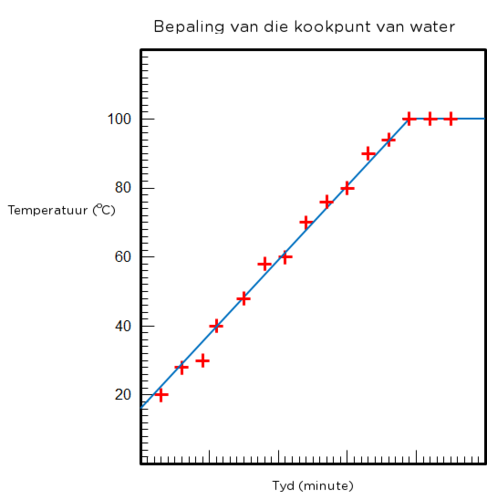</figure><p/>
</div>
<p/>
<div class="note col-md-6" data-type="visit">
<p>Water kan in 'n vakuum by kamertemperatuur kook  <iframe width="420" height="315" src="http://www.youtube.com/embed/XoOQNwcrDWE"></iframe></p>
</div>
<p/>
<div class="note col-md-6" data-type="takenote">
<p>Die kookpunt van water hang af van die suiwerheid van die water. Water wat onsuiwerhede (soos sout of suiker) bevat, kook by 'n ho&#235;r temperatuur as suiwer water. Daarom kook lemoensap en appelsap by 'n temperatuur wat effe ho&#235;r as 100&#176;C is.</p>
</div>
<p/>

<p><strong>ANALISE:</strong></p>

<p/>
<div class="note col-md-6" data-type="takenote">
<p>Verskillende termometers van verskillende besendings kan ook verskillende lesings gee. Dit is omdat hulle dalk verskillend gekalibreer is.</p>
</div>
<p/>
<div class="exercises"><div class="problemset"><div class="entry"><div class="problem">
<p>Wat het jy opgelet toe die water begin kook het? </p><hr/></div><div class="solution">
<p/><p>Ek het borrels in die water gesien.</p>
</div></div><div class="entry"><div class="problem">
<p>Wat dink jy het in die water gebeur toe dit gekook het? </p><hr/><hr/></div><div class="solution">
<p/><p>Van die vloeistof water het in gas verander, daarom was daar borrels.</p>
</div></div><div class="entry"><div class="problem">
<p>Beskryf die vorm van die grafiek. Is dit 'n reguitlyn? </p><hr/><hr/></div><div class="solution">
<p/><p>Die eerste deel van die grafiek het 'n positiewe helling, daarna word die grafiek 'n horisontale lyn.</p>
</div></div><div class="entry"><div class="problem">
<p>Hoe het die temperatuur van die water oor tyd verander? </p><hr/><hr/></div><div class="solution">
<p/><p>Die temperatuur van water verhoog geleidelik en word dan konstant.</p>
</div></div><div class="entry"><div class="problem">
<p>Hoe wys die vorm van die grafiek hoe die temperatuur oor tyd verander het? </p><hr/><hr/><hr/></div><div class="solution">
<p/><p>Die linkerkant van die grafiek, waar die helling positief is, wys dat die temperatuur van die water gestyg het. Die regterkant van die grafiek, waar die grafiek horisontaal is, wys dat die temperatuur van die water nie oor tyd verander het nie, maar konstant gebly het.</p>
</div></div><div class="entry"><div class="problem">
<p>Wat het met die temperatuur van die water gebeur toe dit begin kook het? </p><hr/></div><div class="solution">
<p/><p>Die temperatuur het nie gestyg nie, dit het konstant gebly.</p>
</div></div><div class="entry"><div class="problem">
<p>Hoe lank het dit gevat vir die water om te begin kook? </p><hr/></div><div class="solution">
<p/><p>Leerderafhanklike antwoord.</p>
</div></div><div class="entry"><div class="problem">
<p>By watter temperatuur het die water gekook? </p><hr/></div><div class="solution">
<p/><p>Leerderafhanklike antwoord.</p>
 
<p>Die kookpunt temperatuur hang af van die hoogte bo seespie&#235;l en die lugdruk teen die tyd wat die lesing geneem is. Water kook by 100&#176;C by seevlak en by effe laer temperature by ho&#235;r hoogtes.</p>
</div></div><div class="entry"><div class="problem">
<p>Wat noem ons die temperatuur waarby water kook? Dui hierdie temperatuur op jou grafiek aan. </p><hr/></div><div class="solution">
<p/><p>Die temperatuur waarby water kook word die kookpunt van water genoem.</p>
</div></div></div></div>
<div class="teachers-guide">
<p>Die volgende vraag verwys na 'n groter vlam. 'n Groter vlam beteken eenvoudig dat energie teen 'n ho&#235;r tempo by die water gevoeg word. Die vraag help leerders besef dat 'n vaste hoeveelheid energie nodig is om 'n vaste hoeveelheid water tot by kookpunt te bring. Dit mag hulle help om die konsep van spesifieke hitte te verstaan wanneer dit later behandel word.</p>
</div><ol data-class="ListEnumerated"><li>
<p>Stel voor ons gebruik 'n Bunsenbrander met 'n groter vlam.</p>
 
	    <div class="exercises"><div class="problemset"><div class="entry"><div class="problem">
<p>Dink jy die temperatuur waarby water sal kook is ho&#235;r, laer of dieselfde as die kookpunt wat jy pas gemeet het? Waarom s&#234; jy so? </p><hr/><hr/></div><div class="solution">
<p/><p>Die water sal by dieselfde temperatuur kook. Die groter vlam gee meer energie aan die water, maar dit affekteer nie die kookpunt nie.</p>
</div></div><div class="entry"><div class="problem">
<p>Dink jy die tyd wat die water nodig het om te kook sal langer, korter of dieselfde wees? Hoekom s&#234; jy so? </p><hr/><hr/></div><div class="solution">
<p/><p>Die water sal vinniger kook. Die groter vlam gee meer energie aan die water per eenheid tyd. Dit beteken dat jy minder tyd sal nodig h&#234; om die water te verhit.</p>
</div></div></div></div>

          </li>
</ol><p><strong>GEVOLGTREKKING:</strong></p>

<p>Skryf 'n gevolgtrekking vir die ondersoek. Wanneer jy 'n gevolgtrekking skryf moet jy teruggaan en weer kyk na jou oorspronklike doel. </p><hr/><hr/><div class="teachers-guide">
<p>Leerders moet 'n gevolgtrekking skryf wat die kookpunt van water, wat hulle in die ondersoek bepaal het, noem, byvoorbeeld: "Vanuit hierdie ondersoek kan dit afgelei word dat die kookpunt van water 100&#176;C is."</p>
</div>
<p/>
</div>

<p/>
<div class="teachers-guide">
<p>Hierdie is die tweede deel van die ondersoek as jy na die smeltpunt van ys wil kyk.</p>

<p><strong>Deel 2: Meet die smeltpunt</strong></p>

<p/>

<p><strong>METODE:</strong></p>
<ol data-class="ListEnumerated"><li>
<p>Stel jou apparaat op soos in die volgende prentjie gewys.</p>

          <figure id="gd-idp9529104">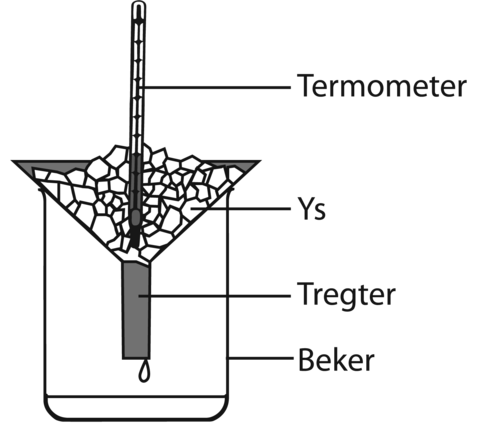</figure><p><strong>Nota:</strong> Dit is beter om gesplinterde ys eerder as groot stukke ys te gebruik omdat dit beter kontak tussen die termometerbol en die ys verseker.</p>

	  </li>
<li>
<p>Los die termometer vir 'n paar minute op die ys. Lees die meting op die termometer. Wat let jy op oor die ys?</p>

	  
<p><strong>Nota:</strong> Leerders behoort op te let dat selfs as die ys begin smelt, die temperatuur konstant bly.</p>
</li>
<li>
<p>Wag 3 minute en meet dan weer die temperatuur. Word die ys warmer of bly die temperatuur konstant?</p>

	  
<p><strong>Nota:</strong> Die temperatuur bly konstant.</p>

	  </li>
<li>Herhaal stap 3 nog een keer.</li>
<li>
<p>Haal van die ysstukkies uit en gooi hulle in die beker. Roer die ys met 'n bietjie water vir omtrent 20 sekondes en meet dan die temperatuur van die yswatermengsel in die beker. Is dit verskillend van die oorspronklike temperatuur van die ys?</p>
 
          
<p><strong>Nota:</strong> Die temperatuur van die yswatermengsel moet dieselfde wees as die oorspronklike temperatuur van die ys.</p>

          </li>
<li>
<p>Sit die beker op 'n warm plek (jy kan dit selfs versigtig oor die Bunsenbrander verhit). Meet elke drie minute die temperatuur van die yswatermengsel. Wat let jy op oor die temperatuur as al die ys gesmelt het?</p>

          
<p><strong>Nota:</strong> Sodra al die ys gesmelt het sal die temperatuur van die water begin styg.</p>

          </li>
<li>Meet nog drie keer na al die ys gesmelt het die temperatuur na elke 3 minute.</li>
<li>Teken jou metings op in 'n tabel in die spasie voorsien.</li>
</ol><p/>

<p><strong>RESULTATE EN WAARNEMINGS:</strong></p>

<p/>

<p>Gebruik die spasie om jou eie tabel te trek en jou resultate op te teken. Kyk na die tabel wat jy in deel 1 ingevul het vir 'n paar wenke.</p>

<p><br/><br/><br/><br/><br/><br/><br/><br/><br/><br/><br/><br/></p>

<p/>

<p>Teken nou 'n grafiek van jou eksperimentele data. Hier is 'n paar riglyne om die grafiek te trek:</p>

<p/>
<div class="exercises"><div class="problemset"><div class="entry"><div class="problem">
<p>Maak die titel van jou grafiek:  <strong>Bepaal die smeltpunt van ys</strong>.</p>
</div><div class="solution">
<p/>
</div></div><div class="entry"><div class="problem">
<p>Wat is die onafhanklike veranderlike? </p><hr/></div><div class="solution">
<p/><p>Die onafhanklike veranderlike is Tyd.</p>
</div></div><div class="entry"><div class="problem">
<p>Wat is die afhanklike veranderlike? </p><hr/></div><div class="solution">
<p/><p>Die afhanklike veranderlike is Temperatuur.</p>
</div></div></div></div>

<p><strong>Nota:</strong> Kyk na die verduideliking vir veranderlikes wat in die eerste deel van die ondersoek gegee is.</p>
<ol data-class="ListEnumerated"><li>Stip die data op jou grafiek en trek 'n eweredige lyn deur die datapunte.</li>
</ol><figure id="gd-idp13867696">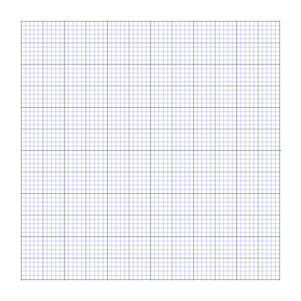</figure><p><strong>Nota:</strong> Leerders se grafieke moet die volgende algemene vorm en kenmerke he:</p>
<figure id="gd-idp19402608">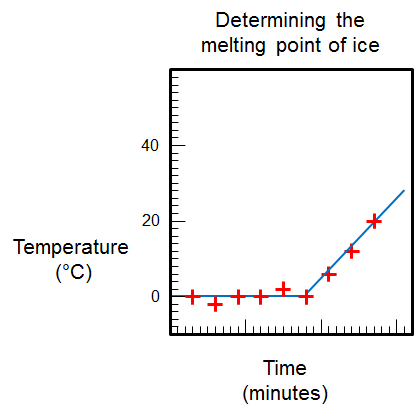</figure><p>Wees bewus daarvan dat temperature onder 0&#176;C opgeteken mag word, dus sal leerders se grafieke nie identies wees nie.</p>

<p/>

<p><strong>ANALISE:</strong></p>
<div class="exercises"><div class="problemset"><div class="entry"><div class="problem">
<p>Hoe het dit gelyk toe die ys begin smelt het? </p><hr/></div><div class="solution">
<p/><p>Die ys het nat geword toe dit begin smelt het.</p>
</div></div><div class="entry"><div class="problem">
<p>Beskryf die vorm van die grafiek. Is dit 'n reguitlyn? </p><hr/><hr/></div><div class="solution">
<p/><p>Die eerste deel van die grafiek is 'n horisontale lyn, dan gaan die grafiek op (die lyn het 'n positiewe helling).</p>
</div></div><div class="entry"><div class="problem">
<p>Hoe het die temperatuur van die ys (en water) oor tyd verander? </p><hr/><hr/></div><div class="solution">
<p/><p>Aanvanklik het die temperatuur van die yswatermengsel konstant gebly. Nadat al die ys gesmelt het, het die temperatuur van die water begin styg.</p>
</div></div><div class="entry"><div class="problem">
<p>Hoe wys die vorm van die grafiek hoe die temperatuur oor tyd verander het? </p><hr/><hr/><hr/></div><div class="solution">
<p/><p>Die horisontale deel van die grafiek verteenwoordig die stadium toe die temperatuur konstant gebly het. Die regterkant van die grafiek, waar die helling positief is, wys dat die temperatuur gestyg het.</p>
</div></div><div class="entry"><div class="problem">
<p>Wat het met die temperatuur van die water gebeur toe al die ys gesmelt het? </p><hr/></div><div class="solution">
<p/><p>Sodra al die ys gesmelt het, het die temperatuur van die water begin styg.</p>
</div></div><div class="entry"><div class="problem">
<p>Hoe lank het dit gevat vir al die ys om te smelt? </p><hr/></div><div class="solution">
<p/><p>Leerderafhanklike antwoord.</p>
</div></div><div class="entry"><div class="problem">
<p>By watter temperatuur het die ys gesmelt? </p><hr/></div><div class="solution">
<p/><p>Die ys het by 0&#176;C gesmelt.</p>
</div></div><div class="entry"><div class="problem">
<p>Wat noem ons die temperatuur waarby ys smelt? Dui hierdie temperatuur op jou grafiek aan. </p><hr/></div><div class="solution">
<p/><p>Die temperatuur waarby ys smelt word die smeltpunt van die ys genoem.</p>
</div></div><div class="entry"><div class="problem">
<p>By watter temperatuur dink jy sal water vries? </p><hr/></div><div class="solution">
<p/><p>Water vries by 0&#176;C.</p>
</div></div></div></div>

<p><strong>Nota:</strong> Die doel van die vraag is om leerders bewus te maak dat smelting en vries die omgekeerde van mekaar is. Die faseverandering tussen water en ys (vloeistof en vastestof water) vind altyd (in suiwer water)plaas by 0&#176;C.</p>
<ol data-class="ListEnumerated"><li>
<p>Veronderstel ons gebruik die Bunsenbrander om die ys te smelt.</p>

          <div class="exercises"><div class="problemset"><div class="entry"><div class="problem">
<p>Dink jy die ys sou smelt by 'n temperatuur wat ho&#235;r, laer of dieselfde as die smeltpunt is wat jy pas gemeet het? Hoekom s&#234; jy so? </p><hr/><hr/></div><div class="solution">
<p/><p>Die ys sal by dieselfde temperatuur smelt omdat die smeltpunt dieselfde bly.</p>
</div></div><div class="entry"><div class="problem">
<p>Dink jy die tyd wat nodig is vir die ys om te smelt sal langer, korter of dieselfde wees? Hoekom s&#234; jy so? </p><hr/><hr/></div><div class="solution">
<p/><p>Die ys sal vinniger smelt, omdat die brander meer energie in 'n korter tyd gee.</p>
</div></div></div></div>

          </li>
</ol><p><strong>Nota:</strong> Weereens word hierdie ingesluit om leerders te laat besef dat 'n vaste hoeveelheid energie nodig is om 'n vaste hoeveelheid ys te smelt. As die ys met 'n brander te verhit word, word die energie bloot vinniger oorgedra dus smelt dit vinniger. Smelting gebeur by die smeltpunt wat 0&#176;C is. Die smeltpunt word nie affekteer nie.</p>
</div>
<p/>
<div class="note col-md-6" data-type="takenote">
<p>Ys smelt by 0&#176;C. Water vries by 0&#176;C. Toevallig of nie?</p>
</div>
<p/>

<p>Ons sal meer oor faseverandering in Gr. 8 Materie en Materiale leer. Om die ys te smelt moet ons energie bysit om die temperatuur te laat styg tot <strong>smeltpunt</strong>. As ons egter water wil vries, moet ons die energie verwyder (uithaal) totdat die temperatuur verminder tot vriespunt.</p>
<figure id="gd-idp10899536">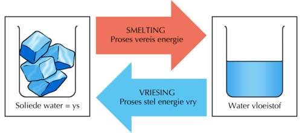</figure><p/>

<p>Het kookpunt 'n omgekeerde proses? Kook is wanneer vloeistof water verander in waterdamp of stoom. Die omgekeerde proses, wanneer stoom terug verander in water, word kondensasie genoem. Om water te kook moet jy energie bysit. As jy egter die waterdamp wil kondenseer moet jy dit afkoel (haal die energie uit dit uit).</p>

<p/>
<figure id="gd-idp9608160">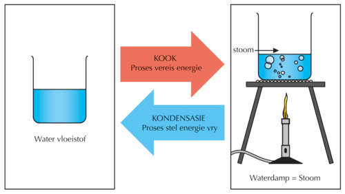</figure><p/>

<p>Die volgende diagram som op wat ons tot dusver geleer het.</p>
<figure id="gd-idp8623680">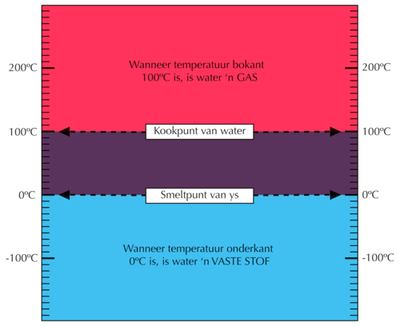</figure><div class="teachers-guide">
<p>In woorde, is die opsomming van die diagram:</p>
<ul data-class="ListBulleted"><li>Kook gebeur wanneer 'n vloeistof in 'n gas verander by kookpunt.</li>
<li>Water kook by 'n temperatuur van 100&#176; wanneer die lugdruk gelyk is aan 1 atmosfeer. Dit word die normale kookpunt van water genoem.</li>
<li>Wanneer water verhit word, sal die temperatuur styg tot die water begin kook. Terwyl die water kook bly die temperatuur konstant. </li>
<li>Smelting vind plaas wanneer 'n vastestof in 'n vloeistof verander.</li>
<li>Ys (die vastestof vorm van water) smelt by 'n temperatuur van 0&#176;C. Dit is die smeltpunt van ys. Dit word ook die vriespunt van water genoem. </li>
<li>Wanneer ys verhit word, sal die temperatuur konstant bly totdat al die ys gesmelt het. Slegs dan sal die temperatuur van water (wat ys was voor dit gesmelt het) bo 0&#176;C styg.</li>
</ul><p/>

<p>Vra jou leerders wat 'kamertemperatuur' is en of hulle dit op die diagram kan vind? Vra hulle om dit op die diagram te merk. Kamertemperatuur is 25&#176;C. Sodra hulle dit op die diagram aangedui het, vra hulle in watter fase water by 25&#176;C sal wees? Water is 'n vloeistof by 25&#176;C.</p>
</div>
<p/>

<p>Kook alle vloeistowwe by 100&#176;C? Nee, natuurlik nie! Nie alle stowwe smelt ook by 0&#176;C nie.</p>

<p/>

<p>Kan jy aan 'n paar stowwe dink wat vastestowwe is by lae temperature, maar lae smeltpunte het? (Dink aan dinge wat maklik smelt wanneer dit warm buite is. Roomys is 'n voorbeeld.)</p>
<div class="teachers-guide">
<p>Bespreek dit in die klas en kry jou leerders se insette. Sommige voorbeelde is: roomys, botter en sjokolade.</p>
</div>
<p/>

<p>In die volgende aktiwiteit gaan ons die kookpunt en die smeltpunt van 'n paar ander stowwe as water ondersoek.</p>

<p/>
<div class="activity" data-type="Activity"><h1 class="title">Kookpunte en smeltpunte van ander stowwe.</h1><div class="teachers-guide">
<p>Dit is 'n <strong><u>opsionele</u></strong> aktiwiteit.</p>
</div>
<p/>

<p><strong>INSTRUKSIES:</strong></p>
<ol data-class="ListEnumerated"><li>Sit die kook- en smeltpunte van die stowwe hieronder gelys in die le&#235; diagram hieronder en antwoord dan die vrae.</li>
<li>Die smeltpunt van stikstof is -200&#176;C. Trek 'n groen streep by hierdie temperatuur op die diagram en merk dit 'Kookpunt van stikstof'.</li>
<li>Die kookpunt van etanol is 78&#176;C. Trek 'n rooi lyn by hierdie temperatuur op die diagram en merk dit 'Kookpunt van etanol'.</li>
<li>Trek nou 'n blou lyn by die kookpunt van water en merk die lyn ook.</li>
<li>Wat is kamertemperatuur? Trek 'n swart lyn by die temperatuur en merk dit.</li>
</ol><p/>
<figure id="gd-idp10659168">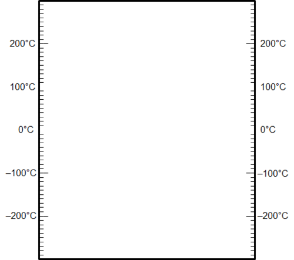</figure><p/>
<div class="teachers-guide">
<p>Leerders se diagramme moet so lyk:</p>
<figure id="gd-idp14659808">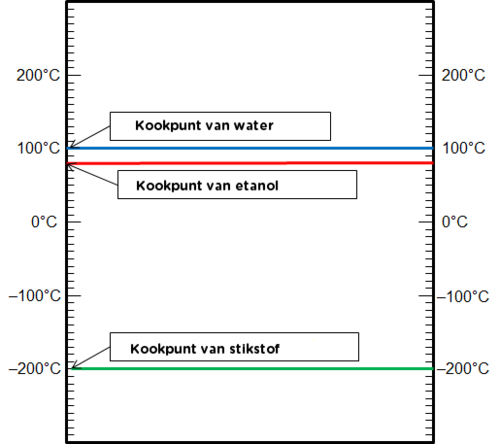</figure><p>Kamertemperatuur is gewoonlik by 21&#176;C.</p>

<p/>
</div>
<p/>

<p><strong>VRAE:</strong></p>
<div class="exercises"><div class="problemset"><div class="entry"><div class="problem">
<p>In watter fase sal stikstof by kamertemperatuur wees? Hoekom s&#234; jy so? </p><hr/><hr/></div><div class="solution">
<p/><p>Stikstof sal 'n gas by kamertemperatuur wees omdat kamertemperatuur ho&#235;r as die kookpunt van stikstof is.</p>
</div></div><div class="entry"><div class="problem">
<p>Veronderstel jy meng bietjie water en etanol. Hulle is gemeng, maar hulle het nie in iets anders verander nie. Die mengsel begin by kamertemperatuur. Veronderstel nou jy begin die mengsel verhit. Watter temperatuur sal eerste bereik word: 78&#176;C of 100&#176;C? </p><hr/></div><div class="solution">
<p/><p>78&#176;C</p>
</div></div><div class="entry"><div class="problem">
<p>Wat dink jy sal gebeur wanneer die mengsel 'n temperatuur van 78&#176;C bereik? Dink jy die etanol sal begin kook? </p><hr/></div><div class="solution">
<p/><p>Leerders mag onseker wees, maar jy kan s&#234; dat die etanol steeds etanol is, dit het nie verander tydens die proses toe dit gemeng is nie. Dus sal dit definiteif by 78&#176;C begin kook.</p>
</div></div><div class="entry"><div class="problem">
<p>Sal die water op dieselfde tyd kook? 78&#176;C of 100&#176;C? </p><hr/></div><div class="solution">
<p/><p>Nee. Water begin eers by 100&#176;C kook.</p>
</div></div></div></div>

<p/>
<div class="teachers-guide">
<p>Die vraag is ingesluit om leerders voor te berei vir die konsep van distillasie wat in die volgende hoofstuk ingelei word. Kookpunt is 'n eienskap van 'n stof. Kookpunt kan gebruik word om 'n stof te identifiseer. Jy kan dit aan jou leerders verduidelik na julle die vraag beantwoord het.</p>
</div>
<p/>
</div>

<p/>
<div class="note col-md-6" data-type="visit">
<p>Speel 'n interaktiewe speletjie gebasseer op die smeltpunte van vastestowwe. <a data-class="ExternalLink" href="http://www.sciencekids.co.nz/gamesactivities/meltingpoints.html"> http://www.sciencekids.co.nz/gamesactivities/meltingpoints.html</a></p>
</div>
<p/>

<p>Tot dusver het ons gesien dat materiale verskillende eienskappe soos hulle sterkte, veerkragtigheid en hulle smelt- en kookpunte het. Hierdie eienskappe bepaal hoe die verskillende materiale gebruik word.</p>

<p/>

<p>Ons het ook vinnig genoem dat sommige materiale warmte beter as ander kan gelei. Dit word warmte-geleidingsvermo&#235; genoem. Dink aan sommige voorwerpe wat jy wil h&#234; warmte goed moet gelei en van watter materiale hulle gemaak moet word. Skryf van hierdie gedagtes neer. </p><hr/><hr/><div class="teachers-guide">
<p>Moontlike antwoorde is dat die metaal van kookpotte warmte goed gelei sodat dit kos en water kan kook, die metale waarvan sommige verwarmers gemaak word moet ook warmte goed kan gelei.</p>
</div>
<p>Waarom dink jy trek jy jou trui aan as jy koud kry? Wat kan ons oor die wol waarvan die trui gemaak is s&#234; in terme van warmte-geleidingsvermo&#235;? </p><hr/><hr/><div class="teachers-guide">
<p>Die wol of materiaal waarvan die trui gemaak is gelei nie warmte goed nie. Dit tree dus as isolator op om die liggaam warm te hou.</p>
</div>
<p/>

<p>Ons gaan later die jaar meer oor die oordrag van warmte leer. Nog 'n eienskap van materiale is hoe goed hulle elektrisiteit kan gelei. Dit word elektriese geleidingsvermo&#235; genoem. Ons sal later die jaar kyk na hoe verskillende materiale gebruik kan word as elektriese isolators (wat beteken dat hulle nie elektrisiteit goed gelei nie).</p></div></div><div class="section"><h2 class="title" id="toc-id-5">Invloed op die omgewing</h2><div class="note col-md-6" data-type="newwords"><ul data-class="ListBulleted"><li>invloed</li>
<li>bekommernis</li>
<li>omgewingsvraagstukke</li>
</ul></div>
<p/>

<p>Ons het vroe&#235;r gesien dat sommige van die eienskappe van materiale wat onder sekere omstandighede voordele mag wees, onder ander omstandighede nadele kan word, soos plastiek en ander materiale wat as hulle in die omgewing beland ernstige nagevolge kan h&#234; en ernstige skade aan diere aandoen. Elke proses van die produsering van materiale wat vir ons doeleindes geskep word, het 'n <strong>invloed</strong> op die omgewing. Sommige prosesse het 'n klein invloed en ander se invloed is groot.</p>

<p/>
<div class="note col-md-6" data-type="visit">
<p>Wat is hidrouliese breking ('fracking')? ('n Artikel) <a data-class="ExternalLink" href="http://www.bbc.co.uk/news/uk-14432401"> http://www.bbc.co.uk/news/uk-14432401</a></p>
</div>
<p/>
<div class="note col-md-6" data-type="didyouknow">
<p>'n Groot <strong>omgewingsvraagstukke</strong> op die oomblik is die voorstel om met hidrouliese breking in die Karoo te begin. Hidrouliese breking is 'n proses waardeur water onder baie ho&#235; druk in klein breuke in die ondergrondse rots gespuit word om dit verder te breek en gas en olie vry te stel wat vir brandstof gebruik kan word.</p>
</div>
<p/>
<div class="note col-md-6" data-type="visit">
<p>'n Artikel oor hidrouliese breking in Suid-Afrika. <a data-class="ExternalLink" href="http://mg.co.za/article/2013-06-28-00-new-us-study-inflames-sas-fracking-feud"> http://mg.co.za/article/2013-06-28-00-new-us-study-inflames-sas-fracking-feud</a></p>
</div>
<p/>

<p>Ons het alreeds gesien hoe die gebruik van materiale soos plastiek en papier 'n negatiewe invloed op ons omgewing kan h&#234;, maar wat van hulle produksie?</p>

<p/>
<div class="activity" data-type="Activity"><h1 class="title">Omgewingsinvloed van die produksie van materiale.</h1>
<p/>

<p><strong>INSTRUKSIES:</strong></p>
<ol data-class="ListEnumerated"><li>Kyk na die prente en antwoord die vrae wat volg oor die produksie van verskillende materiale in Suid-Afrika.</li>
<li>Jy sal ekstra navorsing moet doen vir hierdie aktiwiteit. Van die inligting oor elkeen van die prosesse word voorsien, maar jy sal hulle in meer detail moet navors en die vrae antwoord wat volg.</li>
</ol><p/>

<p><strong>Mynbou:</strong></p>

<p>Mynbou in Suid-Afrika was een van die hoofredes vir ons ontwikkeling. Suid-Afrika is nog steeds een van die voorste lande in die w&#234;reld wat goud myn. Ons myn ook ander produkte, insluitend metale soos chroom, platinum sowel as steenkool en ystererts. Alhoewel dit 'n groot voordeel vir ons ekonomie is, het dit 'n verwoestende effek op die omgewing.</p>

<p/>
<div class="exercises"><div class="problemset"><div class="entry"><div class="problem">
<p>Hierdie yslike gat is eintlik 'n diamantmyn omtrent 40 km buite Pretoria. Watter effek dink jy het dit op die omgewing gehad? </p><hr/><hr/><figure>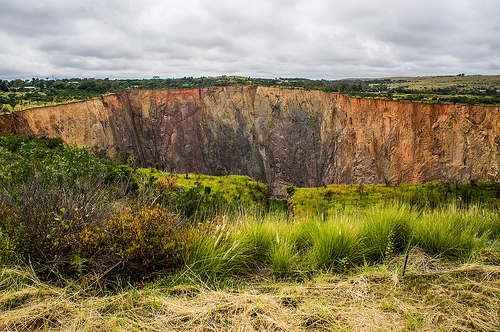<figcaption class="caption">Die Premier Diamantmyn buite Pretoria.<a href="http://www.flickr.com/photos/vaizha/8524241048/"> http://www.flickr.com/photos/vaizha/8524241048/ </a></figcaption></figure></div><div class="solution">
<p/><p>Die plaaslike habitatte word aangetas deur die gat wat gegrawe word, die paaie wat gebou word en ander infrastruktuur wat in plek gesit word. Diamantmyne het groot hoeveelhede diesel nodig wat kweekhuisgasse produseer wat in die atmosfeer opbou.</p>
</div></div><div class="entry"><div class="problem">
        
<p>In die foto kan die 2010 Wereldbeker Sokkerstadium in die middel gesien word. Bo links is groot areas wat slykhope genoem word. Dit is groot stapels gebreekte rots wat oorgebly het na dekades van goud myn. Watter invloed dink jy het dit op die area? </p><hr/><hr/><figure>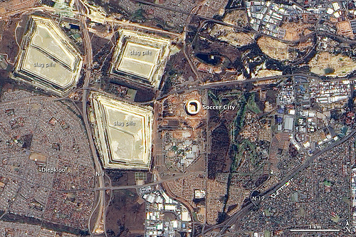<figcaption class="caption">'n Lugfoto van die Soccer City Stadion en omringende area.<a href="http://www.flickr.com/photos/gsfc/4691437306/"> http://www.flickr.com/photos/gsfc/4691437306/ </a></figcaption></figure></div><div class="solution">
<p/><p><strong>Nota:</strong> Leerders mag dalk sukkel met hierdie vraag Jy kan hulle vra of hulle dink iets sal ooit weer op hierdie hope kan groei?</p>

        
<p>Soos jy kan sien groei daar niks op hierdie slykhope nie en is hulle nie groen nie. Hulle is al vir dekades daar en verlaag dus die moontlikheid vir habitatte en natuurlike plantegroei om weer te groei. Die rots kan giftige chemikalie&#235; (soos sianied) bevat wat in die grond sypel en die grond en water kan besmet.</p>
</div></div><div class="entry"><div class="problem">
<p>Die steenkoolmynbedryf in Suid-Afrika het ook 'n groot invloed op die omgewing. Nie alleen die mynbou nie, maar ook die gebruik van steenkool in kragstasies het negatiewe invloede op die omgewing. Wat is sommige hiervan? </p><hr/><hr/></div><div class="solution">
<p/><p>Groot hoeveelhede land word verniel wanneer steenkool gemyn word. Steenkoolmynbou het groot hoeveelhede water nodig wat die water in die omringende areas verminder. Waterafloop kan ook die watervoorsiening besmet. Daar is lugbesoedeling in steenkoolmynbou en in die gebruik van steenkool in kragstasies. Wanneer steenkool brand word kweekhuisgasse vrygestel wat bydra tot suurre&#235;n wat vorm en die kweekhuiseffek. Dit besmet ook die lug vir ander organismes.</p>
</div></div></div></div>

<p/>
<div class="note col-md-6" data-type="visit">
<p>Video oor omgewingsinvloed van steenkoolmynbou in Suid-Afrika. <iframe width="420" height="315" src="http://www.youtube.com/embed/ZStpvaI503Q"></iframe></p>
</div>
<p/>

<p><strong>Maak van papier:</strong></p>

<p>Kan jy 'n w&#234;reld indink sonder papier? Seker nie! Ons gebruik elke dag van ons lewens papier. Suid-Afrika het 'n groot papierproduseringsindustrie. Alhoewel papier belangrik is in ons lewens vandag het die produksie daarvan negatiewe invloede op die omgewing.</p>
<figure><figcaption class="caption">'n Boomplantasie vir papier.<a href="http://www.flickr.com/photos/soilscience/5096641213/"> http://www.flickr.com/photos/soilscience/5096641213/ </a></figcaption></figure><figure>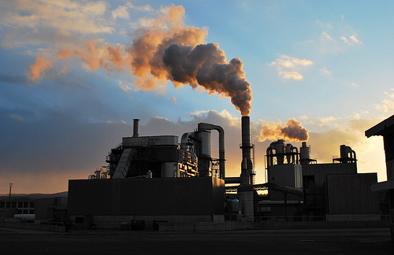<figcaption class="caption">'n Fabriek wat papier maak.<a href="http://www.flickr.com/photos/78752351@N03/8464430910/"> http://www.flickr.com/photos/78752351@N03/8464430910/ </a></figcaption></figure><div class="exercises"><div class="problemset"><div class="entry"><div class="problem">
<p>Groot areas land word gebruik om bome te plant wat dan geoes word om pulp en dan papier te maak. Watter invloed dink jy het dit op die omgewing? Wenk: Dink ook aan wat jy in Lewe en Lewende Dinge oor biodiversiteit geleer het. </p><hr/><hr/><hr/></div><div class="solution">
<p/><p>Plantasies neem baie spasie op en daarom moet die natuurlike inheemse plantegroei uitgekap word (ontbossing). Dit vernietig die habitatte van ander organismes. Hierdie bome kan ook baie water gebruik en voorkom dat enige iets onder hulle kan groei. Hulle verlaag die biodiversiteit in die area.</p>
</div></div><div class="entry"><div class="problem">
<p>Kyk na die foto van die fabriek wat papier maak. Watter effek dink jy het dit op die omgewing? </p><hr/><hr/></div><div class="solution">
<p/><p>Daar is 'n groot hoeveelheid lugbesoedeling van die fabriek, wat bydra tot die opbou van kweekhuisgasse. Papiermeule gebruik baie water, en die afvalwater bevat baie chemikalie&#235; en stowwe wat die omgewing kan beskadig.</p>
</div></div></div></div>

<p/>
<div class="note col-md-6" data-type="visit">
<p>Gaan kyk na hierdie webblad vir 'n lys van 10 van die mees ernstige omgewingskwessies van die 21ste eeu. Elkeen van die omgewingskwessies het ook 'n kort video. <a data-class="ExternalLink" href="http://planetearthherald.com/top-10-environmental-issues/"> http://planetearthherald.com/top-10-environmental-issues/</a></p>
</div>
<p/>
</div></div><div class="section"><h2 class="title" id="toc-id-6">Opsomming</h2>
<p/>
<div class="note col-md-10" data-type="keyconcepts"><ul data-class="ListBulleted"><li>Die eienskappe van 'n materiaal bepaal die doel waarvoor dit gebruik kan word.</li>
<li>Sommige eienskappe van materiale sluit sterkte, veerkragtigheid, warmte- en elektrisiese geleiding in en hulle het spesifieke kook- en smeltpunte.</li>
<li>Kookpunt is die temperatuur waarby 'n vloeistof kook.</li>
<li>Smeltpunt is die temperatuur waarby 'n vastestof smelt.</li>
<li>Die geskiktheid van 'n materiaal vir 'n sekere gebruik word deur ander faktore soos sy koste, kleur en tekstuur be&#239;nvloed.</li>
<li>Hoe ons materiale gebruik en die prosesse wat ons gebruik om hulle te produseer, het altyd 'n invloed op die omgewing.</li>
</ul></div>
<p><strong>Konsepkaart</strong></p>

<p>Hieronder is 'n konsepkaart vir wat ons oor die eienskappe van materiale geleer het. Ons het baie van die eienskappe van materiale in die hoofstuk bespreek. Kan jy sien hoe ons 'n klomp inligting op een bladsy kan opsom?</p>
</div><p/>
<figure id="gd-idp10450992">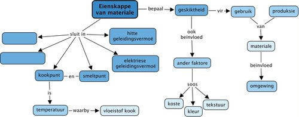</figure><p/>
<div class="teachers-guide">
<p>Onderwyser se begripskaart:</p>
</div><figure id="gd-idp10450992-2">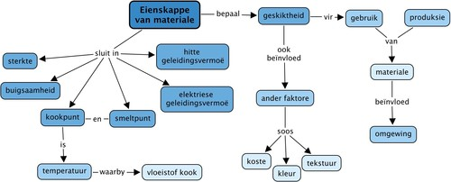</figure><p/>
<div class="activity" data-type="Revision"><h1 class="title">Hersieningsvrae</h1>
<p/>
<ol data-class="ListEnumerated"><li>
<p>Hieronder is 'n paar kort sinne. In elke geval moet jy die sin voltooi deur die ontbrekende woorde in te vul. Skryf die hele sin oor op die lyntjies wat voorsien is. Vul die ontbrekende woorde in.</p>

        <div class="exercises"><div class="problemset"><div class="entry"><div class="problem">
<p>Die stel eienskappe wat 'n materiaal beskryf word die ________ van daardie materiaal genoem. </p><hr/><hr/></div><div class="solution">
<p/><p>Die stel eienskappe wat 'n materiaal beskryf word die <u>eienskappe</u> van die materiaal genoem.</p>
</div></div><div class="entry"><div class="problem">
<p>Materiale wat in dun plate gehamer kan word, word _______ genoem. (Metale het hierdie eienskap.) </p><hr/></div><div class="solution">
<p/><p>Materiale wat in dun plate gehamer kan word, word <u>smeebaar</u> genoem.</p>
</div></div><div class="entry"><div class="problem">
<p>Materiale wat kan buig word _______ genoem. (Sommige plastieke het hierdie eienskap.) </p><hr/></div><div class="solution">
<p/><p>Materiale wat kan buig word <u>veerkragtig/buigsaam</u> genoem.</p>
</div></div><div class="entry"><div class="problem">
<p>Die kookpunt van 'n materiaal is die ________ waarby die vloeistoffase van materiaal in 'n gas verander. </p><hr/><hr/></div><div class="solution">
<p/><p>Die kookpunt van 'n materiaal is die <u>temperatuur</u> waarby die vloeistoffase van 'n materiaal in 'n gas <strong>.</strong></p>
</div></div><div class="entry"><div class="problem">
<p>As ons temperatuur wil meet gebruik ons 'n _____. </p><hr/></div><div class="solution">
<p/><p>As ons temperatuur wil meet gebruik ons 'n <u>termometer</u>.</p>
</div></div><div class="entry"><div class="problem">
<p>Die kookpunt van water by seevlak is _______. </p><hr/></div><div class="solution">
<p/><p>Die kookpunt van water is <u>100 &#176;C</u>.</p>
</div></div><div class="entry"><div class="problem">
<p>Ons s&#234; 'n materiaal wat warmte goed gelei het 'n ho&#235; ________. </p><hr/></div><div class="solution">
<p/><p>Ons s&#234; 'n materiaal wat warmte goed gelei het 'n ho&#235; <u>warmtegeleidingsvermo&#235;</u>.</p>
</div></div><div class="entry"><div class="problem">
<p>As jy 'n stroombaan vir 'n gloeilamp wil maak moet die materiaal wat jy in die stroombaan aan die battery koppel 'n ho&#235; ________. </p><hr/><hr/></div><div class="solution">
<p/><p>As jy 'n stroombaan vir'n gloeilamp wil maak moet die materiaal wat jy in die stroombaan aan die battery koppel 'n ho&#235; <u>elektriese geleidingsvermo&#235;</u>.</p>
</div></div></div></div>

<p>[8 x 1 punt elk = 8 punte]</p>

	</li>
<li>
<p>S&#234; of die volgende stellings WAAR of VALS is. As jy dink 'n stelling is VALS moet jy 'n stelling wat WAAR is in sy plek skryf.</p>

        <div class="exercises"><div class="problemset"><div class="entry"><div class="problem">
<p>Alle vloeistowwe kook by 100&#176;C. </p><hr/><hr/></div><div class="solution">
<p/><p>VALS: Daar is 'n paar moontlike alternatiewe stellings wat waar is:</p>

        <ul data-class="ListBulleted"><li>Nie alle vloeistowwe kook by 100&#176;C nie.</li>
<li>Water kook by 100&#176;C.</li>
<li>Elke vloeistof het sy eie unieke kookpunt.</li>
</ul></div></div><div class="entry"><div class="problem">
<p>Water kook altyd by 100&#176;C. </p><hr/><hr/></div><div class="solution">
<p/><p>VALS: By seevlak kook water by 100&#176;C. (By ho&#235;r hoogtes kook water by temperature effens onder 100&#176;C.)</p>
</div></div><div class="entry"><div class="problem">
<p>Enige materiaal sal smelt en vries by dieselfde temperatuur.</p><hr/><hr/></div><div class="solution">
<p/><p>WAAR</p>
</div></div><div class="entry"><div class="problem">
<p>Wanneer water oor 'n groter vlam gekook word, sal dit by 'n ho&#235;r temperatuur kook.</p><hr/><hr/></div><div class="solution">
<p/><p>VALS: Twee moontlike alternatiewe WAAR stellings:</p>

        <ul data-class="ListBulleted"><li>Wanneer water oor 'n groter vlam gekook word, sal dit by dieselfde temperatuur kook, naamlik 100&#176;C (by laer hoogtes/by seevlak).</li>
<li>Wanneer water oor 'n groter vlam gekook word sal dit vinniger kook (vroeer).</li>
</ul></div></div></div></div>

<p>[4 x 2 punte elk = 8 punte]</p>

	</li>
<li>
<p>'n Wetenskaplike wil bepaal wat die kookpunt van 'n onbekende vloeistof is. Sy sit die onbekende vloeistof in 'n beker en verhit dit versigtig op 'n warmplaat. Die wetenskaplike meet die temperatuur van die vloeistof met gereelde intervalle (elke 3 minute). Na die tyd trek sy die volgende grafiek:</p>

        <figure id="gd-idp16851872">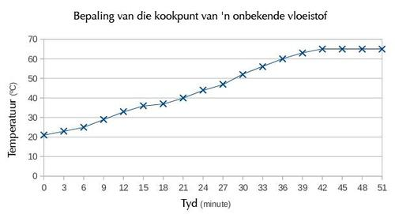</figure><p/>

        <div class="exercises"><div class="problemset"><div class="entry"><div class="problem">
<p>By watter temperatuur kook die onbekende vloeistof? Wys hierdie temperatuur op die grafiek. [2 punte]</p><hr/></div><div class="solution">
<p/><p>Die onbekende vloeistof kook by 65&#176;C. (Leerders moet hierdie temperatuur op die grafiek aandui.)</p>
</div></div><div class="entry"><div class="problem">
<p>Hoe lank neem dit vir die onbekende vloeistof om te begin kook? [1 punt] </p><hr/></div><div class="solution">
<p/><p>Die onbekende vloeistof begin na omtrent 40 minute kook.</p>
</div></div><div class="entry"><div class="problem">
<p>Die wetenskaplike vermoed dat die onbekende vloeistof een van die volgende stowwe op die lys is. Gebruik die lys om die onbekende vloeistof te identifiseer. S&#234; <em>hoekom</em> jy dink dit hierdie stof is. [2 punte]</p>

        <table><tr><td><p><strong>Stof</strong></p></td><td><p><strong>Kookpunt (&#176;C)</strong></p></td></tr><tr><td><p>Asetoon</p></td><td><p>56</p></td></tr><tr><td><p>Metanol</p></td><td><p>65</p></td></tr><tr><td><p>Etanol</p></td><td><p>78</p></td></tr><tr><td><p>Isopropanol</p></td><td><p>83</p></td></tr><tr><td><p>Water</p></td><td><p>100</p></td></tr></table><p/>
 
<p/><hr/><hr/></div><div class="solution">
<p/><p>Die onbekende vloeistof is metanol. Die kookpunt van metanol is dieselfde as die onbekende vloeistof, naamlik 65&#176;C.</p>
</div></div><div class="entry"><div class="problem">
<p>Wat was die temperatuur van die onbekende vloeistof aan die begin van die eksperiment? [1 punt] </p><hr/></div><div class="solution">
<p/><p>21&#176;C</p>
</div></div></div></div>

        </li>
</ol><p>Totaal [22 punte]</p>

<p/>

<p/>
</div></div>
      </div></div>
